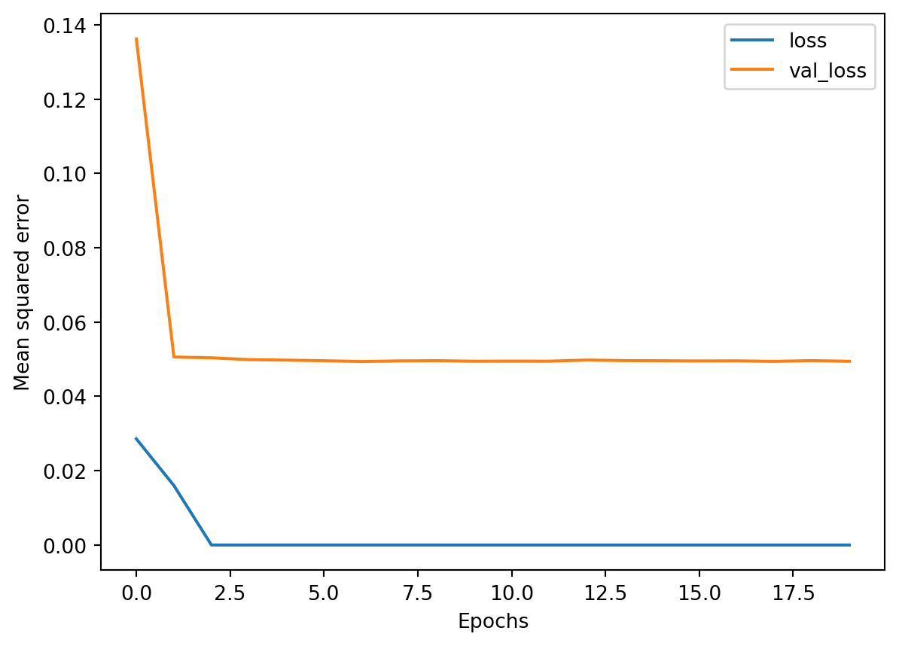

This notebook showcases how to set up neural networks to nowcast inflation using data measured in different frequencies. The goal here is to start with a very simple dataset containing only two variables, inflation (monthly) and oil prices (daily), to slowly build up a more complex neural network based nowcasting model, the TFT-MF available in gingado from its v0.3.0.
Nowcasting is essentially the use of the most current information possible to estimate in real time an economic series of interest such as inflation or GDP before it is actually released1. For example, if you could measure all prices every day, you could create on the last day of the month a very accurate nowcast for the headline inflation for that month - which would only be officially published a few days later. In the case of GDP, this lag between the end of the reference period and actual publication tends to be significant, around 6-10 weeks. For policymakers, investors and other decision-makers, a lot can happen in this period.
A related use of nowcasting is to estimate what the current period’s reading will be as this period rolls out. In other words, estimating today what the inflation reading for this month (or GDP for this quarter) will likely be as new information is unveiled in real time.
The nowcasting model available in gingado from v0.3.0 onwards is an adjusted version of the Temporal Fusion Transformer (TFT) of Lim et al. (2021). This architecture combines flexibility to take on multiple datasets while learning which information to focus on and interpretability to provide insights on the important variables in each case. Empirical results with the TFT in finance and economics settings include stock prices (Hu (2021), Dı́az Berenguer et al. (2024)) and GDP (Laborda, Ruano, and Zamanillo (2023)).
1 Roadmap
The TFT model can be a bit complex to understand at first, so we will build it up, step by step. After loading the data in Section 2, the most basic neural network - a neuron layer - is presented in Section 3. Then a simple extension is shown where a neural network learns which data to let through or not in Section 4. Armed with these elements, Section 5 discusses the next architecture, more suitable for time series. Next, these elements are combined in Section 6 to show how the model knows what to focus on. Section 7 introduces the concept of embeddings of categorical variables, while Section 8 explores this in the context of continuous variables. All this content is then put together in a way that dynamically selects useful inputs for each instance in Section 9. The next component is the self-attention layer in Section 10. Finally, if you want to see the full picture directly, go to Section 11 to see how these elements are put together. Section 12 then trains the model and presents the results for this simple, illustrative nowcasting.
Let’s use our SDMX connectors to find and download data from official sources in a reproducible way.
To abstract from currency issues, we will use US inflation and oil prices, which are denominated in US dollars.
Code
import osos.environ["KERAS_BACKEND"] ="tensorflow"# or "torch", "jax" according to user preferenceimport kerasimport matplotlib.pyplot as pltimport numpy as npimport pandas as pdimport sdmxfrom gingado.utils import load_SDMX_datafrom sklearn.feature_selection import VarianceThresholdfrom sklearn.model_selection import TimeSeriesSplitfrom tqdm import tqdmfrom typing import Callable
2.1 Inflation
Since this is a monthly nowcast of inflation, the best way to do this is to use a monthly change in the consumer price index, \(\pi_t^{(m)}=(\text{CPI}_t - \text{CPI}_{t-1})/\text{CPI}_{t-1}\), not the year-on-year rate, \(\pi_t^{(y)}=(\text{CPI}_t - \text{CPI}_{t-12})/\text{CPI}_{t-12}\), which is how people usually think of inflation. This is because we want to nowcast only the value at the margin; 11 twelfths of \(\pi_t^{(y)}\) are already known, since \(\pi_t^{(y)} = -1 + \prod_{l=0}^{11} (1+\pi_{t-l})\).
Then, only at the end we combine rolling windows of 12 consecutive monthly inflation rates, of which only the last one or two are estimated, to correctly create an annual inflation rate.
Formally, if we know all values except the current and last month’s, then: \[
\hat{\pi}_t^{(y)}=(\prod_{l=0}^1 (1+\hat{\pi}_{t-l}^{(m)}) \prod_{l=2}^{11} (1+\pi_{t-l}^{(m)}) )-1,
\tag{1}\]
where the hat notation (\(\hat{\pi}\)) means that a particular value was estimated.
For inflation, we take a dataflow from the BIS, since we are looking for US data. Let’s explore it first and then choose the correct data specifications to download the time series.3
Code
BIS = sdmx.Client("BIS")cpi_msg = BIS.dataflow('WS_LONG_CPI')cpi_dsd = cpi_msg.structure
CL_FREQ
A Annual
B Daily - business week (not supported)
D Daily
E Event (not supported)
H Half-yearly
M Monthly
Q Quarterly
W Weekly
Name: Code list for Frequency (FREQ), dtype: object
CL_AREA
1X ECB
4T Emerging market economies (aggregate)
5A All reporting economies
5R Advanced economies
AE United Arab Emirates
...
VN Vietnam
XM Euro area
XW World
ZA South Africa
_Z Not applicable
Name: Reference area code list, Length: 101, dtype: object
We can check that the US is amongst the reference areas:
::: {#cell-check US in REF_AREA codelist .cell execution_count=6}
Code
cl__REF_AREA['US']
'United States'
:::
Finally, the “UNIT_MEASURE” values can be:
::: {#cell-codelist for UNIT_MEASURE in dataflow BIS__WS_LONG_CPI .cell execution_count=7}
In the BIS website for this data, we can see that the unit in levels is Index, 2010 = 100 (the other one is Year-on-year changes, in per cent, which as discussed above we don’t want for this case.)
::: {#cell-finding code for index .cell execution_count=8}
Armed with this knowledge, we can now download monthly consumer price index data for the US. Let’s start after 1985 so that we have a sufficiently long history but without too much influence of the tectonic shift of the US dollar devaluation in the early 1970s and ensuing high inflation:
2.3 Temporal features (not implemented for the time being)
There is a lot of information encoded in the temporal features of a time series: which day in the month it is, which month of the year, etc. For example, consider how consumers behave differently in response to oil prices over warmer months (when many decide or not to travel, and how far) compared to colder months (when energy prices factor in heating and is thus perhaps less elastic).
To simplify notation about time, instead of the usual subscript \(t\) as above to denote a time period, for precision about the frequency, we will follow this convention:
subscript \(m\) denotes a given month;
subscript \(d\) denotes a given day;
subscript \(d(m)\) denotes a given day in a given month; example: \(d(m-1)\) is a day in the previous month.
gingado offers a practical way to set up the temporal features that requires only the dates of the dataset.
Code
# NOTE: to add documentation and tests, and later incorporate as a new function in gingado.utilsdef get_timefeat(df, freq="d", features=None, add_to_df=False, remove_const=False):# For the future documentation: the add_to_df argument should be True if the data will be fed to an algorithm that takes in all data at once. If, like neural networks, the inputs are fed through different "pipelines", then use False and then take the result from this function an feed it separately to a neural network.# the frequency is used to filter which features to add. For example, if monthly then no higher frequency features (day of ..., week of... ) are added because it doesn't make sense# None or list. if futures is None, then add all temporal features that the frequency above allows. Otherwise adds only the names ones all_freqs = ["q", "m", "w", "d"]ifnot pd.api.types.is_datetime64_any_dtype(df.index): df.index = pd.to_datetime(df.index)def i2s(index, df=df):# mini-helper func that transforms an index into a pandas Series with the indexreturn pd.Series(index, index=df.index) dict_timefeat = {}if freq in all_freqs: dict_timefeat['year_end'] = i2s(df.index.to_series().apply(lambda x: 1if x.is_year_end else0)) dict_timefeat['quarter_of_year'] = i2s(df.index.quarter -1) dict_timefeat['quarter_end'] = i2s(df.index.to_series().apply(lambda x: 1if x.is_quarter_end else0))if freq in [f for f in all_freqs if f notin ["y", "q"]]: dict_timefeat['month_of_quarter'] = i2s(df.index.to_series().apply(lambda x: (x.month -1) %3)) dict_timefeat['month_of_year'] = i2s(df.index.month -1)if freq in [f for f in all_freqs if f notin ["y", "q", "m"]]: dict_timefeat['week_of_month'] = i2s(df.index.to_series().apply(lambda x: (x.day -1) //7)) dict_timefeat['week_of_quarter'] = i2s(df.index.to_series().apply(lambda x: ((x - pd.Timestamp(f'{x.year}-{(x.month -1) //3*3+1}-01')).days //7))) dict_timefeat['week_of_year'] = i2s(df.index.isocalendar().week)if freq =="d": dict_timefeat['day_of_week'] = i2s(df.index.dayofweek) dict_timefeat['day_of_month'] = i2s(df.index.day) dict_timefeat['day_of_quarter'] = i2s(df.index.to_series().apply(lambda x: (x - pd.Timestamp(f'{x.year}-01-01')).days %91)) dict_timefeat['day_of_year'] = i2s(df.index.dayofyear)# Convert the dictionary of columns to a DataFrame df_timefeat = pd.concat(dict_timefeat, axis=1)if features: df_timefeat = df_timefeat[features]if remove_const: var_thresh = VarianceThreshold(threshold=0) df_timefeat = var_thresh.fit_transform(df_timefeat) df_timefeat = pd.DataFrame(df_timefeat, columns=var_thresh.get_feature_names_out(), index=df.index).astype(int)if add_to_df:return pd.concat([df, df_timefeat], axis=1)else:return df_timefeat
Specifically, temporal features are an excellent (and rare) type of known future input. Those are the data that we know will be like that during forecasting time, ie, at the time the observation \(y_t\) takes place. For example, it is trivial to know the day of the week, of the month etc, for any date we are forecasting in.
For this reason, we now calculate the temporal features of inflation.
Code
df_timefeat = get_timefeat(df_infl_m, freq="m")
2.4 Splitting the dataset
We will now split the dataset into training data up until end-2020 and validation data afterwards. The training data will be further split into 5 temporally sequential folds.4
To simplify, we will consider valid nowcasting input data for a given output in period \(m\) as:
all monthly data up to, and including, \(m-1\); and
Now for every month \(m\) in the dependent variable, we can find all \(m_{t-l}, l\geq 1\) and all \(d(m_{t-s}), s\geq 0\).
Note that in the example below, for each data point that we want to forecast (y), we take 12 lags of the monthly covariates and 250 lags of the daily covariates (broadly corresponding to one year).
Code
maxlags = {"m": 12, "d": 250}def create_data(X, y, maxlags=maxlags, tscv=TimeSeriesSplit(n_splits=5), timedim=True, return_dates=False):# If timeedim is true, then the dimensions of the tensors are n_samples/time dimension/features. If not then it is n_samples/time dimension (lag) * features, ie each lag is flattened as if it were a feature. Use True when passing to recurrent nets, use False for fully connected layers. X_split = {} y_split = {}if return_dates: X_dates = {} n_feat = {k: v.shape[1] for k, v in X.items()}if tscv: split_cv = tscv.split(y) cv_dates = [ (y.index[m], y.index[n]) # (train, valid) for each foldfor m, n in split_cv ]for n_fold, split inenumerate(cv_dates): fold =f"fold_{n_fold}" dates_split = {"train": split[0],"valid": split[1] } X_split[fold] = {"train": [], "valid": []} y_split[fold] = {"train": [], "valid": []}if return_dates: X_dates[fold] = {"train": [], "valid": []}for chunk, dates in dates_split.items():for ysample_date in tqdm(dates): padded_x = {} dates_X = {}for f in X.keys():try:if return_dates: dates_X[f] = X[f][:ysample_date][:-1].index to_pad = X[f][:ysample_date][:-1].valuesexceptKeyError: to_pad = np.zeros((1,1)) padded_x[f] = keras.utils.pad_sequences([to_pad], maxlen=maxlags[f], dtype=np.float32) x_shape = (1, maxlags[f], n_feat[f]) if timedim else (1, maxlags[f] * n_feat[f]) padded_x[f] = padded_x[f].reshape(x_shape) X_split[fold][chunk].append(padded_x) y_split[fold][chunk].append(y_train.loc[ysample_date])if return_dates: X_dates[fold][chunk].append(dates_X)if return_dates:return X_split, y_split, X_datesreturn X_split, y_splitX_train_split, y_train_split, dates = create_data(X=X_train, y=y_train, maxlags=maxlags, return_dates=True)
Let’s see how this time series fold will be structured. Each fold is a sequentially longer window, so we get the following data points:5
Code
for fold in y_train_split.keys():print(f"{fold}:")print(f" {len(y_train_split[fold]['train'])} training X-y pairs")print(f" {len(y_train_split[fold]['valid'])} validation X-y pairs")
fold_0:
75 training X-y pairs
71 validation X-y pairs
fold_1:
146 training X-y pairs
71 validation X-y pairs
fold_2:
217 training X-y pairs
71 validation X-y pairs
fold_3:
288 training X-y pairs
71 validation X-y pairs
fold_4:
359 training X-y pairs
71 validation X-y pairs
Another way to visualise this is in Figure 5, which shows a similar division of dataset along the time dimension, albeit for four folds.
Figure 5
Time series split illustration
3 A simple, fully connected neural network
The goal of this model is to nowcast \(\pi_t\) based on its past values \(\pi_{t-1}\) and on current oil prices \(o_{d(m-s)}, s \geq 0\). The first model we will train is a very simple neural network:
where \(x_t\) is the input data and the subscript of parameters relates to the “depth” of the layer they belong to. Using \(\lambda\) as the dimensionality of the model, \(\mathbf{W}_2 \in \mathbb{R}^{1 \times \lambda}\), \(b_2 \in \mathbb{R}\), \(\mathbf{W}_1 \in \mathbb{R}^{\lambda \times |x_t|}\), \(b_1 \in \mathbb{R}^{d}\), \(\xi \in \mathbb{R}^\lambda\) and \(\phi\) is an activation function. For simplicity, we will use the ReLU activation function, which is simply: \(\phi(z) = \text{max}(z, 0)\).
For this neural network, we need a fix dimensionality of the input data. In other words, the network needs to know how much data it will take in at any given time, and this should not change throughout training or inference time.
For each data in our dependent variable, we simply stack the latest available monthly and daily data and their respective lags. Using the numbers above, this would be 12 lags for monthly data and 250 lags of daily oil data. Linking this to Equation 2 above, \(x_t = [\pi_{m-1}, \dots, \pi_{m-12}, o_d, \dots, o_{d-250}]\).
All of this data will be considered by the neural network at the same time. In a way, this is analogous to how a normal regression is run. However, the number of data points (12 + 250) used in this toy neural network is bigger than typical regressions.
Code
def createNN_fc(dim=16, activation="relu"): nn_fc = keras.Sequential([ keras.layers.Input(shape=(sum([v for v in maxlags.values()]),)), keras.layers.Dense(units=dim, activation=activation, name="SummariseInput"), keras.layers.Dense(units=1, name="CalculateOutput") ], "FullyConnected") nn_fc.compile(loss=keras.losses.MeanSquaredError())return nn_fcnn_fc = createNN_fc()nn_fc.summary()
Figure 6: Architecture of the model with fully connected layer
Note in Figure 6 that a first dense layer (ie, as in Equation 2) takes in 262 data points, uses the activation function ReLU, and then outputs 16 data points for the next layer.6
Checking that it works. In the code below, we take the last fold as an example.
Code
X_train_split_fc, y_train_split_fc = create_data(X=X_train, y=y_train, timedim=False)fold ="fold_4"X_train_fc = np.array([np.concatenate([np.squeeze(v) for v in sample.values()]) for sample in X_train_split_fc[fold]["train"]])y_train_fc = np.array(y_train_split_fc[fold]["train"])X_valid_fc = np.array([np.concatenate([np.squeeze(v) for v in sample.values()]) for sample in X_train_split_fc[fold]["valid"]])y_valid_fc = np.array(y_train_split_fc[fold]["valid"])
You can see in Figure 7 that the loss decreases with training, but the validation loss (ie, calculated on held-out data) is higher than the in-sample loss. This suggests the model is learning too much how to fit the data. In other words, it is also fitting some level of noise, which is not reproducible out-of-sample.
Figure 7: Losses calculated in a simple, fully-connected neural network.
We don’t need to bother training too much this very simple neural network; the goal here is to use it as a building block for a mathematical/econometric intuition of the broader nowcasting model.
4 A useful tool: a gate
The network trained in the previous section can learn how to map the input data to the output data. But there are ways to take advantage of the incredible flexibility in architecture (ie, how neural layers are stacked). One such way is to have the data inform which layers’s outputs are actually used downstream or not. This section describes how.
First, we replicate the same simple fully connected layer of Equation 2 two times. One of the neural networks will behave as before: learning to map the input data to the output data. The second one will also look at the same data, but with a different goal: it will learn how much data to let through. Its output is a value between 0 and 1, which is then multiplied to the “original” network. When this part of the neural network yields values closer to 0, the mainstream values are effectively shut down. Conversely, when the values are close to 1, the data proceeds as normal.
with \(\sigma\) representing the sigmoid function and \(\odot\) the Hadamard multiplication.
This type of model where the gate is trained on the same data was introduced by Dauphin et al. (2017). From now on, we refer to Equation 3 as a Gated Linear Unit (GLU).
Note that the data that informs the gate does not necessarily need to be the same as the mainstream data.
Code
#mainstream = createNN_fc(activation="relu")#gate = createNN_fc(activation="sigmoid")dim =16input= keras.layers.Input(shape=(sum([v for v in maxlags.values()]),), name="FlattenedLaggedData")mainstream = keras.layers.Dense(units=dim, activation="relu", name="SummariseInput")(input)gate = keras.layers.Dense(units=dim, activation="sigmoid", name="Gate")(input)gated_data = keras.layers.Multiply(name="GatedData")([mainstream, gate])output = keras.layers.Dense(units=1, name="CalculateOutput")(gated_data)nn_fc_gated = keras.Model(inputs=input, outputs=output, name="GatedModel")nn_fc_gated.compile(loss=keras.losses.MeanSquaredError())nn_fc_gated.summary()
The model can now be fit with the same input data: it is then used by two different branches (referred to above in the text as “mainstream” and “gate”).
Figure 9: Losses calculated in a simple, fully-connected neural network with gate.
5 Long short-term memory
A marked improvement in how we can model time series data is the use of recurrent neural networks (RNNs). In essence, these are networks that learn to keep a stateful memory, which is updated as the network “visits” each sequential step in time, in turn using both the memory and the new data at that period to predict the output.
In contrast to the fully connected layer in Section 3, which need to look at different lags to pick up any history-dependent information, RNNs look at the observable variables at each period and learn a latent “state” (akin to Kalman filters, for example). The same network then slides up one step in time and uses that information and the previous state to update the state, and so on…
One particular type of RNN that has proven to be very successful in practice is the long short-term memory (LSTM) model, due to Hochreiter (1997). It is actually a combination of four different layers, of which three are actually gates. These layers are built in a specific way. Here’s how the input vector \(x_t\) and the learned LSTM state \(h_{t-1}\) are used for the LSTM-forward pass at time step \(t\):
The basic intuition of the LSTM is that some of the individual component layers essentially learn to look at the current data and the past memory and then decide how much new information to let through. Note that, because their activation is a sigmoid, the output of layers \(f_t\), \(i_t\) and \(o_t\) is a number between 0 and 1. This idea is important to bear in mind because it will be used at a much bigger scale by the whole TFT model - and will be one key feature of its interpretability.
With LSTM networks, it is easier to incorporate mixed-frequency data in a meaningful way. This is done below by passing data of each frequency through their own LSTM layers, and combining their last outputs.
Code
dim =16# arbitrary dimensionfreqs = ["m", "d"] # using here the commonly-used frequency abbreviationsinputs = {f: keras.layers.Input(shape=(None,1), name=f) for f in freqs}LSTMs = []for k, v in inputs.items(): lstm = keras.layers.Masking(mask_value=0.0)(v) lstm = keras.layers.LSTM(units=dim, return_sequences=False, name=f"LSTM__freq_{k}")(lstm) LSTMs.append(lstm)encoded_series = keras.layers.Average(name="encoded_series")(LSTMs)out = keras.layers.Dense(units = dim, activation="relu")(encoded_series)out = keras.layers.Dense(units=1)(out)nn_lstm = keras.Model( inputs=inputs, outputs=out, name="LSTMNetwork")nn_lstm.compile(loss=keras.losses.MeanSquaredError())nn_lstm.summary()
Figure 10: Architecture of the network with LSTM layer
The reason why the dimensions in the input layer are now (None, None, 1), with one addition None compared to before(for example, Figure 6) is due to the time dimension. Whereas before the model didn’t know how many samples it would be fed, now also the length of the time window can change because each time step will pass through exactly the same parameters.
Note that the input goes through a few steps before reaching the LSTM layer. This is due to a masking layer that effectively helps the model jumps time steps for which there is no data available.
To check that the LSTM-based neural network works, we need to feed this neural network a slightly different type of data. LSTM, as other recurrent neural networks, takes in time series data. So, unlike before, we now prepare a time series (or panel data) for each
This neural network will then take in the inputted time series data, and encode each frequency’s series separately through the different LSTM streams. The final result will no longer have a time dimension; it is then averaged, and this average embeddings of the different time series is used to forecast the variable of interest.
Code
X_train_split, y_train_split = create_data(X=X_train, y=y_train, maxlags=maxlags)def adjust_data_lstm(fold="fold_0", chunk="train"): X_lstm = {}for d in X_train_split[fold][chunk]:for key, array in d.items():if key notin X_lstm: X_lstm[key] = [] # Initialize an empty list if key is not present X_lstm[key].append(array) # Append the array to the list for that key lstm_X = {k: np.squeeze(np.array(v), axis=1) for k, v in X_lstm.items()}return lstm_Xlstm_X_train = adjust_data_lstm(fold="fold_4", chunk="train")lstm_X_valid = adjust_data_lstm(fold="fold_4", chunk="valid")history_lstm = nn_lstm.fit(x=lstm_X_train, y=np.array(y_train_split["fold_4"]["train"]), validation_data=(lstm_X_valid, np.array(y_train_split["fold_4"]["valid"])), epochs=20, batch_size=10, shuffle=True)
Introducing gates in a model can bring important advantages. According to Lim et al. (2021), GLUs:
“… reduce the vanishing gradient problem for deep architectures by providing a linear path for gradients while retaining non-linear capabilities”, and
“… provide flexibility to suppress any parts of the architecture that are not required for a given dataset”.
This section formalises the GLU model of Section 4 as if it were a single layer. This serves as a building block for the Gated Residual Network (GRN), a group of layers that learns to dynamically adjust the complexity of a larger neural network.
First, the GLU as a layer is introduced below.
Code
# NOTE: to add to codebase and replace here with an importclass GatedLinearUnit(keras.Layer):def__init__(self, d_model:int=16, # Embedding size, $d_\text{model}$ dropout_rate:float|None=None, # Dropout rate use_time_distributed:bool=True, # Apply the GLU across all time steps? activation:str|Callable|None=None, # Activation function**kwargs ):"Gated Linear Unit dynamically gates input data"super().__init__(**kwargs)self.d_model = d_modelself.dropout_rate = dropout_rateself.use_time_distributed = use_time_distributedself.activation = activationdef build(self, input_shape):super().build(input_shape)self.dropout = keras.layers.Dropout(self.dropout_rate) ifself.dropout_rate isnotNoneelseNoneself.activation_layer = keras.layers.Dense(self.d_model, activation=self.activation)self.gate_layer = keras.layers.Dense(self.d_model, activation='sigmoid')self.multiply = keras.layers.Multiply()ifself.use_time_distributed:self.activation_layer = keras.layers.TimeDistributed(self.activation_layer)self.gate_layer = keras.layers.TimeDistributed(self.gate_layer)def call(self, inputs, training=None ):"""List of outputs with shape: [ (batch size, ..., d_model), (batch size, ..., d_model) ]"""ifself.dropout isnotNoneand training: inputs =self.dropout(inputs) activation_output =self.activation_layer(inputs) gate_output =self.gate_layer(inputs)returnself.multiply([activation_output, gate_output]), gate_outputdef get_config(self): config =super().get_config() config.update({'d_model': self.d_model,'dropout_rate': self.dropout_rate,'use_time_distributed': self.use_time_distributed,'activation': self.activation })return config
The GLU is simply:
\[
\text{GLU}(x) = \sigma(W_{G} x + b_G) \odot (W_1 x + b_1),
\tag{5}\]
with \(W_G, W_1 \in \mathbb{R}^{|x| \times \lambda}\) and \(b_G, b_1 \in \mathbb{R}^{\lambda}\).
Code
dim =16keras.backend.clear_session()inputs = keras.layers.Input(shape=(sum([v for v in maxlags.values()]),),name="FlattenedLaggedInput")gated_features, gate = GatedLinearUnit(d_model=dim, activation="relu", use_time_distributed=False, name="Gate")(inputs)output = keras.layers.Dense(units=dim, activation="relu", name="SummariseInput")(gated_features)output = keras.layers.Dense(units=1, name="CalculateOutput")(output)nn_glu = keras.Model(inputs=inputs, outputs=output, name="GLUModel")nn_glu.compile(loss=keras.losses.MeanSquaredError())nn_glu.summary()
Figure 13: Losses calculated in a GLU neural network
As mentioned above, the GLU itself actually serves as an important component of a slightly larger group of layers, the GRNs. Now is the time to introduce them.
GRNs are formally:
\[
\text{GRN}(x) = \text{LayerNorm}(x + \text{GLU}(W_2 (\text{ELU}(W_1 x + b1 + W_c c )) + b_2)),
\tag{6}\]
where \(\text{LayerNorm}\) (Ba, Kiros, and Hinton (2016)) normalises its inputs, ie subtracts its mean and divides by its standard deviation,7\(\text{ELU}\) is the exponential linear unit function (Clevert, Unterthiner, and Hochreiter (2015)). Unlike ReLUs, ELUs allow for negative values, which pushes unit activations closer to zero at a lower computation complexity, and producing more accurate results.
The final component in Equation 6 is \(c \in \mathbb{R}^{\lambda}\), or a context vector - more on that below in Section 7. For the moment, we can use \(c=\mathbf{0}\) the zero vector.
Put simply, the GRN takes in a certain data \(x\) and combines it with a non-linear transformation. This non-linear component goes through an GLU, which learns when to gate and when to let through the non-linear transformation of the data.
The GRN helps keep information only from relevant input variables and keeps the model as simple as possible by only applying non-linearities when relevant.
Figure 15: Losses calculated in a GRN neural network

7 Time to talk about time
Nowcasting, or forecasting for that matter, involves trying to estimate the values of a variable of interest for a certain date. This trivial fact actually offers an important opportunity to improve estimates: it corresponds to something that is known about the future, ie about the variable we want to estimate.
But temporal features are not continuous variables as inflation and oil price changes. Because they are categorical, they need to be embedded in a vector space with real data to incorporate continuous variables. This is the goal of this section.
Code
timefeat = ["month_of_quarter", "month_of_year"]y_timefeat_train = {timef: np.array([ get_timefeat(pd.DataFrame(i.values, index=[i.name], columns=i.index), features=timef)for i in y_train_split_fc[fold]["train"] ])for timef in timefeat}y_timefeat_valid = {timef: np.array([ get_timefeat(pd.DataFrame(i.values, index=[i.name], columns=i.index), features=timef)for i in y_train_split_fc[fold]["valid"] ])for timef in timefeat}date_range = pd.date_range(start="2024-01-01", end="2024-12-31", freq="D")time_feats = get_timefeat(pd.DataFrame(index=date_range), features=timefeat)
When working with categorical data, it is necessary to be explicit about the number of possible different values (eg, there are 7 different days of the week).
Code
vocab_sizes = {col: time_feats[col].nunique() for col in time_feats}print(vocab_sizes)
{'month_of_quarter': 3, 'month_of_year': 12}
Code
dim =16keras.backend.clear_session()inputs = { k: keras.layers.Input(shape=(1,), name=k, dtype='int32') # Input layer for each feature with shape (1,)for k in vocab_sizes.keys()}embedded_layers = { k: keras.layers.Embedding(input_dim=v, output_dim=dim, name=f"{k}_embedding")(inputs[k])for k, v in vocab_sizes.items()}combined = keras.layers.Average()(list(embedded_layers.values()))x = keras.layers.Dense(dim, activation="relu")(combined)output = keras.layers.Dense(1)(x)nn_embed = keras.Model(inputs=list(inputs.values()), outputs=output)nn_embed.compile(loss=keras.losses.MeanSquaredError())nn_embed.summary()
Figure 18: Losses calculated in a simple, fully-connected neural network.
The embeddings themselves can be inspected, as in Figure 19.
Code
plt.figure(figsize=(8, 6))plt.imshow(nn_embed.layers[2].get_weights()[0], cmap='viridis', aspect='auto')plt.colorbar(label='Values') # Optional: Add colorbar to show scaleplt.xlabel('Embedding vector elements')plt.ylabel('Month of the quarter')plt.show()plt.figure(figsize=(8, 6))plt.imshow(nn_embed.layers[3].get_weights()[0], cmap='viridis', aspect='auto')plt.colorbar(label='Values') # Optional: Add colorbar to show scaleplt.xlabel('Embedding vector elements')plt.ylabel('Month of the year')plt.show()
Figure 19: Embedding values
(a) Month of the year
(b) Quarter of the year
To get an intuition how this type of data feeds into a nowcasting model, consider that each nowcasted date has a different combination of month of year and month of quarter. Then the inputs to the model change correspondingly. The time series is plotted below.
Code
y_time_feats = get_timefeat(pd.DataFrame(index=y_train.index), features=timefeat)embed_layers = [nn_embed.get_layer(f"{k}_embedding") for k in vocab_sizes.keys()]embed_values = keras.Model(inputs=[e.inputfor e in embed_layers], outputs=[e.output for e in embed_layers])embed_ts = embed_values.predict(dict(y_time_feats))embed_ts = [ np.squeeze(i, axis=1)for i in embed_ts]
(c) Average of month of quarter and year embeddings
One way these categorical variables can enrich models with continues variables that were used before is by using the embeddings for a particular instance as additional context, as the \(c\) in Equation 6.
Code
dim =16keras.backend.clear_session()inputs_cont = keras.layers.Input(shape=(sum([v for v in maxlags.values()]),), name="FlattenedLaggedInput")continuous = keras.layers.Dense(dim, activation="relu")(inputs_cont)inputs_time = { k: keras.layers.Input(shape=(1,), name=k, dtype='int32') # Input layer for each feature with shape (1,)for k in vocab_sizes.keys()}# Step 2: Create embedding layers for each inputembedded_layers = { k: keras.layers.Embedding(input_dim=v, output_dim=dim, name=f"{k}_embedding")(inputs_time[k])for k, v in vocab_sizes.items()}context = keras.layers.Average()(list(embedded_layers.values()))gated_features, gate = GatedResidualNetwork(d_model=dim, use_time_distributed=False, name="GRN")(continuous, additional_context=context)output = keras.layers.Dense(units=16, activation="relu", name="SummariseInput")(gated_features)output = keras.layers.Dense(units=1, name="CalculateOutput")(output)nn_grn_context = keras.Model(inputs=[inputs_cont, inputs_time], outputs=output, name="GRNwithContextModel")nn_grn_context.compile(loss=keras.losses.MeanSquaredError())nn_grn_context.summary()
Figure 22: Losses calculated in a GRN neural network with context
8 Encoding continuous variables
The intuition on embeddings built from Section 7 can also serve now to think about embedding, or encoding, continuous variables.
In contrast to categorical variables like temporal features, or entity identity (ie, which country, or bank, or stock, etc), the possible values are not defined a priori. So there is no way to create a lookup table that will map a given category, say, the month of “September” to a specific vector.
However, continuous variables can still be mapped into a vector space defined in \(\mathbb{R}\), in a way that encodes useful information. The simplest way to achieve this is by training parameters of a linear transformation of each data point of variable \(j\) in time \(t\) into \(\xi_t^{(j)} \in \mathbb{R}^{\lambda}\).
Code
inputs = {f: keras.layers.Input(shape=(None,1), name=f) for f in freqs}encoded_inputs = { k: keras.layers.TimeDistributed( keras.layers.Dense(dim), name=f"encoding__{k}" )(v)for k, v in inputs.items()}LSTMs = []for k, v in encoded_inputs.items(): lstm = keras.layers.Masking(mask_value=0.0)(v) lstm = keras.layers.LSTM(units=dim, return_sequences=False, name=f"LSTM__freq_{k}")(lstm) LSTMs.append(lstm)encoded_series = keras.layers.Average(name="encoded_series")(LSTMs)out = keras.layers.Dense(units = dim, activation="relu")(encoded_series)out = keras.layers.Dense(units=1)(out)nn_encodcont = keras.Model( inputs=inputs, outputs=out, name="EncodedContinuousVarsNetwork")nn_encodcont.compile(loss=keras.losses.MeanSquaredError())nn_encodcont.summary()
Table 8: Summary of network embedding continuous variable_weights
Figure 23: Architecture of the network with encoded continuous variables before the LSTM layers
Compare this figure with Figure 10. Note that while before, each LSTM received as input the original variable, now in Figure 23 the inputs to the LSTMs are actually \(\lambda=16\) latent variables for each raw data variable we included.
The aim of this operation is to allow the model to learn richer nuance from the data in addition to the data point itself.
Code
X_train_split, y_train_split = create_data(X=X_train, y=y_train, maxlags=maxlags)def adjust_data_lstm(fold="fold_0", chunk="train"): X_lstm = {}for d in X_train_split[fold][chunk]:for key, array in d.items():if key notin X_lstm: X_lstm[key] = [] # Initialize an empty list if key is not present X_lstm[key].append(array) # Append the array to the list for that key lstm_X = {k: np.squeeze(np.array(v), axis=1) for k, v in X_lstm.items()}return lstm_Xlstm_X_train = adjust_data_lstm(fold="fold_4", chunk="train")lstm_X_valid = adjust_data_lstm(fold="fold_4", chunk="valid")history_encodcont = nn_encodcont.fit(x=lstm_X_train, y=np.array(y_train_split["fold_4"]["train"]), validation_data=(lstm_X_valid, np.array(y_train_split["fold_4"]["valid"])), epochs=20, batch_size=10, shuffle=True)
Now is a good time to put these elements together in a more directly useful way. In particular, we can consider how it can help select the most informative variables amongst a set of input series (eg, lagged inflation and oil prices in the current toy example.)
The Variable Selection Networks (VSN) are components of the TFT that are built with GRNs, taking in each covariate and outputting a weighted average of the covariates, where the weights are learned by the model.
VSNs can be used to select amongst continuous, categorical or even static variables. The code below focuses on the continuous variables of the current toy model, \(\pi_m\) and \(o_d\).
Code
class StaticVariableSelection(keras.Layer):def__init__(self, d_model:int=16, # Embedding size, $d_\text{model}$ dropout_rate:float=0., **kwargs ):"Static variable selection network"super(StaticVariableSelection, self).__init__(**kwargs)self.d_model = d_modelself.dropout_rate = dropout_rate# Define GRNs for the transformed embeddingsself.grns_transformed_embeddings = [] # This will be a list of GRN layersself.flat = keras.layers.Flatten()self.softmax = keras.layers.Activation('softmax')self.mult = keras.layers.Multiply()def build(self, input_shape):super(StaticVariableSelection, self).build(input_shape) num_static = input_shape[2]# Define the GRN for the sparse weightsself.grn_sparse_weights = GatedResidualNetwork( d_model=self.d_model, output_size=num_static, use_time_distributed=False )for i inrange(num_static):# Create a GRN for each static variableself.grns_transformed_embeddings.append( GatedResidualNetwork(self.d_model, use_time_distributed=False ) )def call(self, inputs, training=None): _, _, num_static, _ = inputs.shape # batch size / one time step (since it's static) / num static variables / d_model flattened =self.flat(inputs)# Compute sparse weights grn_outputs, _ =self.grn_sparse_weights(flattened, training=training) sparse_weights =self.softmax(grn_outputs) sparse_weights = keras.ops.expand_dims(sparse_weights, axis=-1)# Compute transformed embeddings transformed_embeddings = []for i inrange(num_static): embed, _ =self.grns_transformed_embeddings[i](inputs[:, 0, i:i+1, :], training=training) transformed_embeddings.append(embed) transformed_embedding = keras.ops.concatenate(transformed_embeddings, axis=1)# Combine with sparse weights combined =self.mult([sparse_weights, transformed_embedding]) static_vec = keras.ops.sum(combined, axis=1)return static_vec, sparse_weightsdef get_config(self): config =super(StaticVariableSelectionLayer, self).get_config() config.update({'d_model': self.d_model,'dropout_rate': self.dropout_rate })return config
Temporal variable selection networks work by considering all variables (of a given frequency) at the same time, together with an (optional) static context embedding, to calculate weights that are multiplied by a processed version of each variable. Breaking this up in steps:
consider \(\xi_t^{(j)} \in \mathbb{R}^{\lambda}\) to be the encoding (as in Table 6 or Table 8) of the \(j\)th variable in time \(t\), and collect the values at time \(t\) for all\(J\) input variables for that frequency in the flattened vector \(\Xi_t\)
collect the static variable encoders for use as context, \(c_s \in \mathbb{R}^{\lambda}\),
then, the selection weights for that frequency are the result of \(\nu_t = \text{Softmax}(\text{GRN}(\Xi_t, c_s)) \in \mathbb{R}^{|J|}\)$,
these weights, which sum to one due to the softmax operation, are used on a version of the encoded variables that has itself been further encoded by a variable-specific GRN: \(\tilde{\xi}_t = \sum_{j=1}^{J}\nu_t^{(j)} \text{GRN}_j (\xi_t^{(j)}) \in \mathbb{R}^{\lambda}\).
In short, the temporal variable selection network takes in data with the shape (batch size / number of time steps / number of variables / embedding dimension \(\lambda\)) and output a tensor with the shape (batch size / number of time steps / embedding dimension \(\lambda\)).
Code
class TemporalVariableSelection(keras.Layer):def__init__(self, d_model:int=16, # Embedding size, $d_\text{model}$ dropout_rate:float=0., **kwargs ):"Temporal variable selection"super(TemporalVariableSelection, self).__init__(**kwargs)self.d_model = d_modelself.dropout_rate = dropout_rateself.mult = keras.layers.Multiply()def build(self, input_shape):super(TemporalVariableSelection, self).build(input_shape)self.time_steps, self.num_input_vars, self.d_model = input_shape[1:]self.var_sel_weights = GatedResidualNetwork( d_model=self.d_model, output_size=self.num_input_vars, dropout_rate=self.dropout_rate, use_time_distributed=True, )self.softmax = keras.layers.Activation('softmax')# Create a GRN for each temporal variableself.grns_transformed_embeddings = [ GatedResidualNetwork( d_model=self.d_model, dropout_rate=self.dropout_rate, use_time_distributed=True )for _ inrange(self.num_input_vars) ]def call(self, inputs, # List of temporal embeddings, static context context=None, # Used for static_context in the TFT training=None ):# shape of inputs (temporal_embeddings): (batch size / num time steps / num variables / embedding dimension, ie dim_model) flattened_embed = keras.ops.reshape( # \Xi_t inputs, (-1, self.time_steps, self.num_input_vars *self.d_model) ) parallel_variables = keras.ops.split( inputs, indices_or_sections=self.num_input_vars, axis=2 ) # tensor is shaped this way so that a GRN can be applied to each variable of each batch c_s = keras.ops.expand_dims(context, axis=1) if context elseNone# variable weights grn_outputs, _ =self.var_sel_weights(flattened_embed, c_s, training=training) variable_weights =self.softmax(grn_outputs) variable_weights = keras.ops.expand_dims(variable_weights, axis=2) transformed_embeddings, _ = [self.grns_transformed_embeddings[i](parallel_variables[i], training=training)for i inrange(self.num_input_vars) ] transformed_embeddings = keras.ops.stack(transformed_embeddings, axis=2) combined = keras.layers.Multiply()([variable_weights, transformed_embeddings]) temporal_vec = keras.sum(combined, axis=2)self.variable_weights = variable_weightsreturn temporal_vecdef get_selection_weights(self):returnself.variable_weights
Code
dim =16# arbitrary dimensionkeras.backend.clear_session()# <continuous variables>freqs = ["m", "d"]cont_inputs = {f: keras.layers.Input(shape=(None,1), name=f"input__freq_{f}") for f in freqs}encoded_inputs = { k: keras.layers.TimeDistributed( keras.layers.Dense(dim), name=f"encoding__freq_{k}" )(v)for k, v in cont_inputs.items()}# expand dims to add a dimension for the number of variables (in this case, one)encoded_inputs = {k: keras.ops.expand_dims(v, axis=2) for k, v in encoded_inputs.items()}# </continuous variables># <categorical variables>inputs = { k: keras.layers.Input(shape=(1,), name=k, dtype='int32') # Input layer for each feature with shape (1,)for k in vocab_sizes.keys()}embedded_layers = { k: keras.layers.Embedding(input_dim=v, output_dim=dim, name=f"{k}_embedding")(inputs[k])for k, v in vocab_sizes.items()}combined = keras.layers.Average()(list(embedded_layers.values()))x = keras.layers.Dense(dim, activation="relu")(combined)output = keras.layers.Dense(1)(x)nn_embed = keras.Model(inputs=list(inputs.values()), outputs=output)# </categorical variables>### <VSN>flattened = { k: keras.layers.Reshape(target_shape=(-1, v.shape[-1] * v.shape[-2]), name=f"reshape__freq_{k}")(v) # \Xi_tfor k, v in encoded_inputs.items()}parallel_variables = { k: keras.ops.split( v, indices_or_sections=v.shape[2], axis=2 )for k, v in encoded_inputs.items()} # each value is a list, with each item of the list corresponding to one variablevar_weights = { k: keras.layers.Activation('softmax')( GatedResidualNetwork( d_model=dim, output_size=1, # number of input variables in each frequency use_time_distributed=True, name=f"variable_selection__freq_{k}" )(v)[0] )for k, v in flattened.items()}varspecific_grn = { k: keras.ops.concatenate([ GatedResidualNetwork( d_model=dim, use_time_distributed=True, name=f"variable_specific__freq_{k}" )(v[i])[0]for i inrange(len(v)) # number of input variables in each frequency ], axis=2) # along the num_input_vars dimension, resulting in batch size / num time steps / num input vars / embedding dim (lambda)for k, v in parallel_variables.items()}combined_features = {}for f in freqs: broadcasted_weights = keras.ops.tile(keras.ops.expand_dims(var_weights[f], axis=-1), (1, 1, 1, dim)) combined_features[f] = keras.ops.sum( keras.layers.Multiply(name=f"weighting__freq_{f}")([broadcasted_weights, varspecific_grn[f]]), axis=2 )# </VSN>LSTMs = []for k, v in combined_features.items(): lstm = keras.layers.Masking(mask_value=0.0)(v) lstm = keras.layers.LSTM(units=dim, return_sequences=False, name=f"LSTM__freq_{k}")(lstm) LSTMs.append(lstm)encoded_series = keras.layers.Average(name="encoded_series")(LSTMs)out = keras.layers.Dense(units = dim, activation="relu", name="FinalFeatureTransformation")(encoded_series)out = keras.layers.Dense(units=1)(out)nn_vsn = keras.Model( inputs=cont_inputs, outputs=out, name="VSN")nn_vsn.compile(loss=keras.losses.MeanSquaredError())nn_vsn.summary()
Figure 25: Architecture of model with variable selection network
Code
X_train_split, y_train_split, X_dates = create_data(X=X_train, y=y_train, maxlags=maxlags, return_dates=True)def adjust_data_vsn(fold="fold_0", chunk="train"): X_vsn = {}for d in X_train_split[fold][chunk]:for key, array in d.items():if key notin X_vsn: X_vsn[key] = [] # Initialize an empty list if key is not present X_vsn[key].append(array) # Append the array to the list for that key vsn_X = {k: np.squeeze(np.array(v), axis=1) for k, v in X_vsn.items()}return vsn_Xvsn_X_train = adjust_data_vsn(fold="fold_4", chunk="train")vsn_X_valid = adjust_data_vsn(fold="fold_4", chunk="valid")y_freq ="m"# only do the date features for the same frequency as the dependent variabledate_feats = {fold: {chunk: [] for chunk in X_dates[fold].keys()} for fold in X_dates.keys()}for fold in X_dates.keys():for chunk in X_dates[fold].keys(): dates_fold = [i[y_freq] for i in X_dates[fold][chunk]]for i in dates_fold: to_pad = get_timefeat(pd.DataFrame(index=i), freq=y_freq, features=timefeat).values padded = keras.utils.pad_sequences([to_pad], maxlen=maxlags[y_freq], dtype=np.int32) date_feats[fold][chunk].append(padded)#<VSN date padding> -- only to be done in the same frequency as the dependent variable# try:# if return_dates:# dates_X[f] = X[f][:ysample_date][:-1].index# to_pad = X[f][:ysample_date][:-1].values# except KeyError:# to_pad = np.zeros((1,1))# padded_x[f] = keras.utils.pad_sequences([to_pad], maxlen=maxlags[f], dtype=np.float32)# x_shape = (1, maxlags[f], n_feat[f]) if timedim else (1, maxlags[f] * n_feat[f])# padded_x[f] = padded_x[f].reshape(x_shape)#</VSN date padding># y_timefeat_train = {timef:# np.array([# get_timefeat(pd.DataFrame(i.values, index=[i.name], columns=i.index), features=timef)# for i in y_train_split_fc[fold]["train"]# ])# for timef in timefeat# }# y_timefeat_valid = {timef:# np.array([# get_timefeat(pd.DataFrame(i.values, index=[i.name], columns=i.index), features=timef)# for i in y_train_split_fc[fold]["valid"]# ])# for timef in timefeat# }history_vsn = nn_vsn.fit(x=vsn_X_train, y=np.array(y_train_split["fold_4"]["train"]), validation_data=(vsn_X_valid, np.array(y_train_split["fold_4"]["valid"])), epochs=20, batch_size=10, shuffle=True)
Figure 26: Losses of the model with variable selection
10 Now is a(nother) good time to pay attention
The transformer architecture (Vaswani et al. (2017)) is based on an altogether different way to look at time series compared to recurrent neural networks as the LSTMs above. Its basic idea is to look at the whole sequence at the same time instead of sequentially. This allows the network to learn relevant connections between data that might be far off in time.
Starting with just one frequency for clarity, consider we input time windows of size \(N = k + \tau_{\text{max}}\), for \(k\) the maximum number of lags and \(\tau_{\text{max}}\) the number of forecasted steps. Each of these time steps is associated with a value vector, \(v \in \mathbb{R}^{\lambda_{\text{value}}}\); the time series of these values is \(\mathbf{V} \in \mathbb{R}^{N \times \lambda_{\text{value}}}\). The self-attention mechanism will scale the \(\mathbf{V}\) to reflect the similarity between two other vectors also associated with each time steps.
These vectors are their keys and queries, respectively \(\mathbf{K}, \mathbf{Q} \in \mathbb{R}^{\lambda_{\text{attention}}}\). “Attention” refers to how their similarity is calculated. Essentially, key vectors that are more similar to query vectors will generate larger numbers of “attention”; similarly, if they are orthogonal, this will result in a low or null attention between a pair of time steps. We follow common practice and calculate the attention weights using the dot-product between the key and query vectors, normalised by softmax to sum to one and span only the positive space:
class ScaledDotProductAttention(keras.Layer):def__init__(self, dropout_rate:float=0.0, # Will be ignored if `training=False`**kwargs ):super(ScaledDotProductAttention, self).__init__(**kwargs)self.dropout_rate = dropout_ratedef build(self, input_shape):super(ScaledDotProductAttention, self).build(input_shape)self.dropout = keras.layers.Dropout(rate=self.dropout_rate)self.activation = keras.layers.Activation('softmax')self.dot_22 = keras.layers.Dot(axes=(2, 2)) # both inputs need to have the same size in their axis=2 dimensions, in this case, d_model for bothself.dot_21 = keras.layers.Dot(axes=(2, 1)) # the size of the first input's axis=2 dimension needs to match the size of the second input's axis=1 dimensionself.lambda_layer = keras.layers.Lambda(lambda x: (-1e9) * (1.- keras.ops.cast(x, 'float32')))self.add = keras.layers.Add()def call(self, q, # Queries, tensor of shape (?, time, D_model) k, # Keys, tensor of shape (?, time, D_model) v, # Values, tensor of shape (?, time, D_model) mask, # Masking if required (sets Softmax to very large value), tensor of shape (?, time, time) training=None, # Whether the layer is being trained or used in inference ):# returns Tuple (layer outputs, attention weights) scale = keras.ops.sqrt(keras.ops.cast(keras.ops.shape(k)[-1], dtype='float32')) attention =self.dot_22([q, k]) / scale#attention = keras.ops.einsum("bij,bjk->bik", q, keras.ops.transpose(k, axes=(0, 2, 1))) / scaleif mask isnotNone: mmask =self.lambda_layer(mask) attention =self.add([attention, mmask]) attention =self.activation(attention)if training: attention =self.dropout(attention) output =self.dot_21([attention, v])#output = keras.ops.einsum("btt,btd->bt", attention, v)return output, attention
Code
dim =16# arbitrary dimensionfreqs = ["m", "d"]inputs = {f: keras.layers.Input(shape=(None,1), name=f) for f in freqs}encoded_inputs = { k: keras.layers.TimeDistributed( keras.layers.Dense(dim), name=f"encoding__{k}" )(v)for k, v in inputs.items()}Attns = []LSTMs = []for k, v in encoded_inputs.items(): attn, attn_weights = ScaledDotProductAttention(name=f"Attention__freq_{k}")(q=v, k=v, v=v, mask=None) Attns.append(attn) lstm = keras.layers.LSTM(units=dim, return_sequences=False, name=f"LSTM__freq_{k}")(attn) LSTMs.append(lstm)encoded_series = keras.layers.Concatenate(name="encoded_series")(LSTMs)out = keras.layers.Dense(units = dim, activation="relu")(encoded_series)out = keras.layers.Dense(units=1)(out)nn_sdpa = keras.Model( inputs=inputs, outputs=out, name="Attention")nn_sdpa.compile(loss=keras.losses.MeanSquaredError())nn_sdpa.summary()
Figure 27: Architecture of the multi-frequency attention Model
Note that in this simple model, the way the different frequencies are combined in Figure 27 is by passing the result of the respective self-attention layers (each with their own size along the time dimension due to different frequencies) through their own LSTM layer returning one value. This value is then weighted by a dense network, producing the output.
Code
X_train_split, y_train_split = create_data(X=X_train, y=y_train, maxlags=maxlags)def adjust_data_lstm(fold="fold_0", chunk="train"): X_lstm = {}for d in X_train_split[fold][chunk]:for key, array in d.items():if key notin X_lstm: X_lstm[key] = [] # Initialize an empty list if key is not present X_lstm[key].append(array) # Append the array to the list for that key lstm_X = {k: np.squeeze(np.array(v), axis=1) for k, v in X_lstm.items()}return lstm_Xlstm_X_train = adjust_data_lstm(fold="fold_4", chunk="train")lstm_X_valid = adjust_data_lstm(fold="fold_4", chunk="valid")history_sdpa = nn_sdpa.fit(x=lstm_X_train, y=np.array(y_train_split["fold_4"]["train"]), validation_data=(lstm_X_valid, np.array(y_train_split["fold_4"]["valid"])), epochs=20, batch_size=10, shuffle=True)
Taking this concept of an attention layer further is the interpretable multi-head attention layer. This is just a combination of different scaled dot-product attention layers with the following actions:
linear transformation of the query, keys and values before being passed to each attention layer,
concatenation and a linear combination of the results of the layer.
In effect, this allows the attention layers to attend to different aspects of the time series. For example, one attention head might focus on seasonality issues, while another on non-linearities and jumps in volatility.
Note that there is no way to know in advance what aspects each head will be focusing on. However, this can be inspected (and subjectively interpreted) ex post.
Code
class InterpretableMultiHeadAttention(keras.Layer):def__init__(self, n_head:int=4, d_model:int=16, # Embedding size, $d_\text{model}$ dropout_rate:float=0.0, # Will be ignored if `training=False`**kwargs ):super(InterpretableMultiHeadAttention, self).__init__(**kwargs)self.n_head = n_headself.d_model = d_modelself.d_qk =self.d_v = d_model // n_head # the original model divides by number of headsself.dropout_rate = dropout_ratedef build(self, input_shape):super(InterpretableMultiHeadAttention, self).build(input_shape)# using the same value layer facilitates interpretability vs_layer = keras.layers.Dense(self.d_v, use_bias=False, name="shared_attn_value")# creates list of queries, keys and values across headsself.qs_layers = [keras.layers.Dense(self.d_qk) for _ inrange(self.n_head)]self.ks_layers = [keras.layers.Dense(self.d_qk) for _ inrange(self.n_head)]self.vs_layers = [vs_layer for _ inrange(self.n_head)]self.attention = ScaledDotProductAttention(dropout_rate=self.dropout_rate)self.w_o = keras.layers.Dense(self.d_model, use_bias=False, name="W_v") # W_v in Eqs. (14)-(16), output weight matrix to project internal state to the original TFTself.dropout = keras.layers.Dropout(self.dropout_rate)def call(self, q, # Queries, tensor of shape (?, time, d_model) k, # Keys, tensor of shape (?, time, d_model) v, # Values, tensor of shape (?, time, d_model) mask=None, # Masking if required (sets Softmax to very large value), tensor of shape (?, time, time) training=None ): heads = [] attns = []for i inrange(self.n_head): qs =self.qs_layers[i](q) ks =self.ks_layers[i](q) vs =self.vs_layers[i](v) head, attn =self.attention(qs, ks, vs, mask, training=training)if training: head =self.dropout(head) heads.append(head) attns.append(attn) head = keras.ops.stack(heads) ifself.n_head >1else heads[0] attn = keras.ops.stack(attns) outputs = keras.ops.mean(head, axis=0) ifself.n_head >1else head # H_tilde outputs =self.w_o(outputs)if training: outputs =self.dropout(outputs)return outputs, attn
Code
dim =16# arbitrary dimensionfreqs = ["m", "d"]inputs = {f: keras.layers.Input(shape=(None,1), name=f) for f in freqs}encoded_inputs = { k: keras.layers.TimeDistributed( keras.layers.Dense(dim), name=f"encoding__{k}" )(v)for k, v in inputs.items()}Attns = []LSTMs = []for k, v in encoded_inputs.items(): attn, attn_weights = InterpretableMultiHeadAttention(name=f"IMHA__freq_{k}")(q=v, k=v, v=v, mask=None) Attns.append(attn) lstm = keras.layers.LSTM(units=dim, return_sequences=False, name=f"LSTM__freq_{k}")(attn) LSTMs.append(lstm)encoded_series = keras.layers.Concatenate(name="encoded_series")(LSTMs)out = keras.layers.Dense(units = dim, activation="relu")(encoded_series)out = keras.layers.Dense(units=1)(out)nn_imha = keras.Model( inputs=inputs, outputs=out, name="Attention")nn_imha.compile(loss=keras.losses.MeanSquaredError())nn_imha.summary()
Table 11: Summary of network with interpretable multi-head attention
Figure 29: Architecture of the model with multi-frequency interpretable multi-head attention
Code
X_train_split, y_train_split = create_data(X=X_train, y=y_train, maxlags=maxlags)def adjust_data_lstm(fold="fold_0", chunk="train"): X_lstm = {}for d in X_train_split[fold][chunk]:for key, array in d.items():if key notin X_lstm: X_lstm[key] = [] # Initialize an empty list if key is not present X_lstm[key].append(array) # Append the array to the list for that key lstm_X = {k: np.squeeze(np.array(v), axis=1) for k, v in X_lstm.items()}return lstm_Xlstm_X_train = adjust_data_lstm(fold="fold_4", chunk="train")lstm_X_valid = adjust_data_lstm(fold="fold_4", chunk="valid")history_imha = nn_imha.fit(x=lstm_X_train, y=np.array(y_train_split["fold_4"]["train"]), validation_data=(lstm_X_valid, np.array(y_train_split["fold_4"]["valid"])), epochs=20, batch_size=10, shuffle=True)
It all boils down to this: using past data, coupled with higher frequency current data, to nowcast current values. Continuing with the simplistic example in this page, now it is time to nowcast monthly inflation from its lags and from daily changes in oil prices.
13 References
Ba, Jimmy Lei, Jamie Ryan Kiros, and Geoffrey E Hinton. 2016. “Layer Normalization.”arXiv Preprint arXiv:1607.06450.
Bok, Brandyn, Daniele Caratelli, Domenico Giannone, Argia M. Sbordone, and Andrea Tambalotti. 2018. “Macroeconomic Nowcasting and Forecasting with Big Data.” Journal Article. Annual Review of Economics 10 (Volume 10, 2018): 615–43. https://doi.org/https://doi.org/10.1146/annurev-economics-080217-053214.
Clevert, Djork-Arné, Thomas Unterthiner, and Sepp Hochreiter. 2015. “Fast and Accurate Deep Network Learning by Exponential Linear Units (Elus).”arXiv Preprint arXiv:1511.07289.
Dauphin, Yann N, Angela Fan, Michael Auli, and David Grangier. 2017. “Language Modeling with Gated Convolutional Networks.” In International Conference on Machine Learning, 933–41. PMLR.
Dı́az Berenguer, Abel, Yifei Da, Matı́as Nicolás Bossa, Meshia Cédric Oveneke, and Hichem Sahli. 2024. “Causality-Driven Multivariate Stock Movement Forecasting.”Plos One 19 (4): e0302197.
Giannone, Domenico, Lucrezia Reichlin, and David Small. 2008. “Nowcasting: The Real-Time Informational Content of Macroeconomic Data.”Journal of Monetary Economics 55 (4): 665–76.
Hochreiter, S. 1997. “Long Short-Term Memory.”Neural Computation MIT-Press.
Hu, Xiaokang. 2021. “Stock Price Prediction Based on Temporal Fusion Transformer.” In 2021 3rd International Conference on Machine Learning, Big Data and Business Intelligence (MLBDBI), 60–66. IEEE.
Laborda, Juan, Sonia Ruano, and Ignacio Zamanillo. 2023. “Multi-Country and Multi-Horizon GDP Forecasting Using Temporal Fusion Transformers.”Mathematics 11 (12): 2625.
Lim, Bryan, Sercan Ö Arık, Nicolas Loeff, and Tomas Pfister. 2021. “Temporal Fusion Transformers for Interpretable Multi-Horizon Time Series Forecasting.”International Journal of Forecasting 37 (4): 1748–64.
Vaswani, Ashish, Noam Shazeer, Niki Parmar, Jakob Uszkoreit, Llion Jones, Aidan N. Gomez, Lukasz Kaiser, and Illia Polosukhin. 2017. “Attention Is All You Need.”https://arxiv.org/abs/1706.03762.
Footnotes
Giannone, Reichlin, and Small (2008) pioneered nowcasting in macroeconomics. See Bok et al. (2018) for a review.↩︎
Mac users might need to include the following line after importing the package os and before importing keras: os.environ["PYTORCH_ENABLE_MPS_FALLBACK"] = "1".↩︎
See here for a practical walkthrough showing how to explore data with SDMX.↩︎
See here for more information on time series splitting.↩︎
The division of the data between folds might produce slightly unequal-sized folds, as can be seen in the current example.↩︎
Ignore the None in the shapes; this means the dimensionality along that axis depends on each case. Specifically, the first dimension of the shapes in keras are always the number of samples going in the model. Because this varies with every training, application, etc, it is not fixed as the other dimensions are. Another way of thinking about this is as follows: in a regression, you know exactly how many variables you need to have, but the number of data points can vary.↩︎
Normalising a layer helps to avoid the numbers from becoming too large, which is detrimental to gradient transmission and therefore to learning. This is helpful for example when summing up the outputs from intermediary layers.↩︎
Source Code
---title: Nowcasting inflation with neural networksdescription: A simple, mixed-frequency exampleoutput-file: nowcast.htmlauthors: - Douglas K. G. Araujo - Johannes Dampcode-fold: showcode-tools: truenumber-sections: truejupyter: python3warning: falsefig-cap-location: top---This notebook showcases how to set up neural networks to nowcast inflation using data measured in different frequencies. The goal here is to start with a very simple dataset containing only two variables, inflation (monthly) and oil prices (daily), to slowly build up a more complex neural network based nowcasting model, the TFT-MF available in `gingado` from its v0.3.0.Nowcasting is essentially the use of the most current information possible to estimate in real time an economic series of interest such as inflation or GDP before it is actually released[^review]. For example, if you could measure all prices every day, you could create on the last day of the month a very accurate nowcast for the headline inflation for that month - which would only be officially published a few days later. In the case of GDP, this lag between the end of the reference period and actual publication tends to be significant, around 6-10 weeks. For policymakers, investors and other decision-makers, a lot can happen in this period.[^review]: @giannone2008nowcasting pioneered nowcasting in macroeconomics. See @bok2018nowcasting for a review.A related use of nowcasting is to estimate what the current period's reading will be as this period rolls out. In other words, estimating today what the inflation reading for this month (or GDP for this quarter) will likely be as new information is unveiled in real time.The nowcasting model available in `gingado` from v0.3.0 onwards is an adjusted version of the Temporal Fusion Transformer (TFT) of @lim2021temporal. This architecture combines *flexibility* to take on multiple datasets while learning which information to focus on and *interpretability* to provide insights on the important variables in each case. Empirical results with the TFT in finance and economics settings include stock prices (@hu2021stock, @diaz2024causality) and GDP (@laborda2023multi).## RoadmapThe TFT model can be a bit complex to understand at first, so we will build it up, step by step. After loading the data in @sec-data, the most basic neural network - a neuron layer - is presented in @sec-fc. Then a simple extension is shown where a neural network learns which data to let through or not in @sec-glu. Armed with these elements, @sec-lstm discusses the next architecture, more suitable for time series. Next, these elements are combined in @sec-gates to show how the model knows what to focus on. @sec-timeembed introduces the concept of embeddings of categorical variables, while @sec-encodcont explores this in the context of continuous variables. All this content is then put together in a way that dynamically selects useful inputs for each instance in @sec-varsel. The next component is the self-attention layer in @sec-transf. Finally, if you want to see the full picture directly, go to @sec-tftmf to see how these elements are put together. @sec-nowcast then trains the model and presents the results for this simple, illustrative nowcasting.## Loading the packages[^mac] and data {#sec-data}[^mac]: Mac users might need to include the following line after importing the package `os` and before importing `keras`: `os.environ["PYTORCH_ENABLE_MPS_FALLBACK"] = "1"`.Let's use our SDMX connectors to find and download data from official sources in a reproducible way.To abstract from currency issues, we will use US inflation and oil prices, which are denominated in US dollars.```{python}#| label: load packagesimport osos.environ["KERAS_BACKEND"] ="tensorflow"# or "torch", "jax" according to user preferenceimport kerasimport matplotlib.pyplot as pltimport numpy as npimport pandas as pdimport sdmxfrom gingado.utils import load_SDMX_datafrom sklearn.feature_selection import VarianceThresholdfrom sklearn.model_selection import TimeSeriesSplitfrom tqdm import tqdmfrom typing import Callable```### InflationSince this is a monthly nowcast of inflation, the best way to do this is to use a *monthly change in the consumer price index*, $\pi_t^{(m)}=(\text{CPI}_t - \text{CPI}_{t-1})/\text{CPI}_{t-1}$, not the year-on-year rate, $\pi_t^{(y)}=(\text{CPI}_t - \text{CPI}_{t-12})/\text{CPI}_{t-12}$, which is how people usually think of inflation. This is because we want to nowcast only the value at the margin; 11 twelfths of $\pi_t^{(y)}$ are already known, since $\pi_t^{(y)} = -1 + \prod_{l=0}^{11} (1+\pi_{t-l})$.Then, only at the end we combine rolling windows of 12 consecutive monthly inflation rates, of which only the last one or two are estimated, to correctly create an annual inflation rate. Formally, if we know all values except the current and last month's, then: $$\hat{\pi}_t^{(y)}=(\prod_{l=0}^1 (1+\hat{\pi}_{t-l}^{(m)}) \prod_{l=2}^{11} (1+\pi_{t-l}^{(m)}) )-1,$$ {#eq-finalnowcast}where the hat notation ($\hat{\pi}$) means that a particular value was estimated.For inflation, we take a dataflow from the [BIS](https://data.bis.org/topics/CPI), since we are looking for US data. Let's explore it first and then choose the correct data specifications to download the time series.[^sdmx][^sdmx]: See [here](https://sdmx1.readthedocs.io/en/latest/walkthrough.html) for a practical walkthrough showing how to explore data with SDMX.```{python}#| label: "inflation dataflow"BIS = sdmx.Client("BIS")cpi_msg = BIS.dataflow('WS_LONG_CPI')cpi_dsd = cpi_msg.structure```These are all possible keys:```{python}#| label: "CPI_dimensions"cpi_dsd['BIS_LONG_CPI'].dimensions.components```For example, "FREQ" (frequency) takes in these values:```{python}#| label: "FREQ_codelist"cl__FREQ = sdmx.to_pandas(cpi_dsd['BIS_LONG_CPI'].dimensions.get("FREQ").local_representation.enumerated)cl__FREQ```And "REF_AREA" (reference area) can be set to:```{python}#| label: "REF_AREA_codelist"cl__REF_AREA = sdmx.to_pandas(cpi_dsd['BIS_LONG_CPI'].dimensions.get("REF_AREA").local_representation.enumerated)cl__REF_AREA```We can check that the US is amongst the reference areas:```{python}#| label: "check US in REF_AREA codelist"cl__REF_AREA['US']```Finally, the "UNIT_MEASURE" values can be:```{python}#| label: "codelist for UNIT_MEASURE in dataflow BIS__WS_LONG_CPI"cl__UNIT_MEASURE = sdmx.to_pandas(cpi_dsd['BIS_LONG_CPI'].dimensions.get("UNIT_MEASURE").local_representation.enumerated)cl__UNIT_MEASURE```In the [BIS website for this data](https://data.bis.org/topics/CPI#faq), we can see that the unit in levels is `Index, 2010 = 100` (the other one is `Year-on-year changes, in per cent`, which as discussed above we don't want for this case.)```{python}#| label: "finding code for index"cl__UNIT_MEASURE[cl__UNIT_MEASURE.str.contains("Index, 2010 = 100")]```Armed with this knowledge, we can now download monthly consumer price index data for the US. Let's start after 1985 so that we have a sufficiently long history but without too much influence of the tectonic shift of the US dollar devaluation in the early 1970s and ensuing high inflation:```{python}#| label: fig-cpi#| fig-cap: "US consumer price index, 2010 = 100"df_infl = load_SDMX_data( sources={"BIS": "'WS_LONG_CPI'"}, keys={"FREQ": "M", "REF_AREA": "US", "UNIT_MEASURE": "628"}, params={"startPeriod": 1985})df_infl.plot()```As you can see in @fig-cpi, we downloaded the series $\{\text{CPI}_t\}$. Transforming that into $\{\pi_t\}$, defined above, we have:```{python}#| label: fig-pi#| fig-cap: US monthly inflation ratefig, ax = plt.subplots()plt.axhline(y=0, linewidth=1.5, color="black")df_infl_m = df_infl.pct_change().dropna()df_infl_m.index = df_infl_m.index + pd.offsets.MonthEnd(0) # move to month enddf_infl_m.plot(ax=ax)plt.show()```### Oil pricesSince the focus is on US inflation, below we get WTI oil prices. This data is downloaded from the [St Louis Fed's FRED webpage](https://fred.stlouisfed.org/series/DCOILWTICO).```{python}#| label: fig-oil#| fig-cap: WTI oil pricesdf_oil = pd.read_csv("docs/DCOILWTICO.csv")df_oil['DCOILWTICO'] = pd.to_numeric(df_oil['DCOILWTICO'], errors='coerce')df_oil['DATE'] = pd.to_datetime(df_oil['DATE'])df_oil.set_index('DATE', inplace=True)df_oil.plot()```For the nowcasting, we are interested in the daily variation, clipped because of the sharp movements during the onset of the Covid-19 pandemic:```{python}#| label: fig-oilD#| fig-cap: Daily change in WTI oil pricesfig, ax = plt.subplots()plt.axhline(y=0, linewidth=1.5, color="black")df_oil_d = df_oil.pct_change().dropna()df_oil_d.plot(ax=ax)plt.ylim(-0.25, 0.25)plt.show()```### Temporal features (not implemented for the time being)There is a lot of information encoded in the temporal features of a time series: which day in the month it is, which month of the year, etc. For example, consider how consumers behave differently in response to oil prices over warmer months (when many decide or not to travel, and how far) compared to colder months (when energy prices factor in heating and is thus perhaps less elastic).To simplify notation about time, instead of the usual subscript $t$ as above to denote a time period, for precision about the frequency, we will follow this convention:- subscript $m$ denotes a given month;- subscript $d$ denotes a given day;- subscript $d(m)$ denotes a given day in a given month; example: $d(m-1)$ is a day in the previous month.`gingado` offers a practical way to set up the temporal features that requires only the dates of the dataset.```{python}#| label: tempfeatures# NOTE: to add documentation and tests, and later incorporate as a new function in gingado.utilsdef get_timefeat(df, freq="d", features=None, add_to_df=False, remove_const=False):# For the future documentation: the add_to_df argument should be True if the data will be fed to an algorithm that takes in all data at once. If, like neural networks, the inputs are fed through different "pipelines", then use False and then take the result from this function an feed it separately to a neural network.# the frequency is used to filter which features to add. For example, if monthly then no higher frequency features (day of ..., week of... ) are added because it doesn't make sense# None or list. if futures is None, then add all temporal features that the frequency above allows. Otherwise adds only the names ones all_freqs = ["q", "m", "w", "d"]ifnot pd.api.types.is_datetime64_any_dtype(df.index): df.index = pd.to_datetime(df.index)def i2s(index, df=df):# mini-helper func that transforms an index into a pandas Series with the indexreturn pd.Series(index, index=df.index) dict_timefeat = {}if freq in all_freqs: dict_timefeat['year_end'] = i2s(df.index.to_series().apply(lambda x: 1if x.is_year_end else0)) dict_timefeat['quarter_of_year'] = i2s(df.index.quarter -1) dict_timefeat['quarter_end'] = i2s(df.index.to_series().apply(lambda x: 1if x.is_quarter_end else0))if freq in [f for f in all_freqs if f notin ["y", "q"]]: dict_timefeat['month_of_quarter'] = i2s(df.index.to_series().apply(lambda x: (x.month -1) %3)) dict_timefeat['month_of_year'] = i2s(df.index.month -1)if freq in [f for f in all_freqs if f notin ["y", "q", "m"]]: dict_timefeat['week_of_month'] = i2s(df.index.to_series().apply(lambda x: (x.day -1) //7)) dict_timefeat['week_of_quarter'] = i2s(df.index.to_series().apply(lambda x: ((x - pd.Timestamp(f'{x.year}-{(x.month -1) //3*3+1}-01')).days //7))) dict_timefeat['week_of_year'] = i2s(df.index.isocalendar().week)if freq =="d": dict_timefeat['day_of_week'] = i2s(df.index.dayofweek) dict_timefeat['day_of_month'] = i2s(df.index.day) dict_timefeat['day_of_quarter'] = i2s(df.index.to_series().apply(lambda x: (x - pd.Timestamp(f'{x.year}-01-01')).days %91)) dict_timefeat['day_of_year'] = i2s(df.index.dayofyear)# Convert the dictionary of columns to a DataFrame df_timefeat = pd.concat(dict_timefeat, axis=1)if features: df_timefeat = df_timefeat[features]if remove_const: var_thresh = VarianceThreshold(threshold=0) df_timefeat = var_thresh.fit_transform(df_timefeat) df_timefeat = pd.DataFrame(df_timefeat, columns=var_thresh.get_feature_names_out(), index=df.index).astype(int)if add_to_df:return pd.concat([df, df_timefeat], axis=1)else:return df_timefeat```Specifically, temporal features are an excellent (and rare) type of *known future* input. Those are the data that we know will be like that during forecasting time, ie, at the time the observation $y_t$ takes place. For example, it is trivial to know the day of the week, of the month etc, for any date we are forecasting in.For this reason, we now calculate the temporal features of inflation.```{python}#| label: temporal features for the inflation seriesdf_timefeat = get_timefeat(df_infl_m, freq="m")```### Splitting the datasetWe will now split the dataset into training data up until end-2020 and validation data afterwards. The training data will be further split into 5 temporally sequential folds.[^tssplit][^tssplit]: See [here](https://scikit-learn.org/stable/modules/cross_validation.html#time-series-split) for more information on time series splitting.To simplify, we will consider valid nowcasting *input* data for a given output in period $m$ as:- all monthly data up to, and including, $m-1$; and- all daily data up to, and including, $d(m)$.```{python}#| label: "time series splits"# Training date cutoffcutoff ="2020-12-31"y_train, y_test = df_infl_m[:cutoff][1:], df_infl_m[cutoff:][1:]Xm_train, Xm_test = df_infl_m[:cutoff][:-1], df_infl_m[cutoff:][:-1]Xd_train, Xd_test = df_oil_d[:cutoff], df_oil_d[cutoff:]X_train = {"m": Xm_train, "d": Xd_train}X_test = {"m": Xm_test, "d": Xd_test}```Now for every month $m$ in the dependent variable, we can find all $m_{t-l}, l\geq 1$ and all $d(m_{t-s}), s\geq 0$.Note that in the example below, for each data point that we want to forecast (`y`), we take 12 lags of the monthly covariates and 250 lags of the daily covariates (broadly corresponding to one year).```{python}#| label: create datamaxlags = {"m": 12, "d": 250}def create_data(X, y, maxlags=maxlags, tscv=TimeSeriesSplit(n_splits=5), timedim=True, return_dates=False):# If timeedim is true, then the dimensions of the tensors are n_samples/time dimension/features. If not then it is n_samples/time dimension (lag) * features, ie each lag is flattened as if it were a feature. Use True when passing to recurrent nets, use False for fully connected layers. X_split = {} y_split = {}if return_dates: X_dates = {} n_feat = {k: v.shape[1] for k, v in X.items()}if tscv: split_cv = tscv.split(y) cv_dates = [ (y.index[m], y.index[n]) # (train, valid) for each foldfor m, n in split_cv ]for n_fold, split inenumerate(cv_dates): fold =f"fold_{n_fold}" dates_split = {"train": split[0],"valid": split[1] } X_split[fold] = {"train": [], "valid": []} y_split[fold] = {"train": [], "valid": []}if return_dates: X_dates[fold] = {"train": [], "valid": []}for chunk, dates in dates_split.items():for ysample_date in tqdm(dates): padded_x = {} dates_X = {}for f in X.keys():try:if return_dates: dates_X[f] = X[f][:ysample_date][:-1].index to_pad = X[f][:ysample_date][:-1].valuesexceptKeyError: to_pad = np.zeros((1,1)) padded_x[f] = keras.utils.pad_sequences([to_pad], maxlen=maxlags[f], dtype=np.float32) x_shape = (1, maxlags[f], n_feat[f]) if timedim else (1, maxlags[f] * n_feat[f]) padded_x[f] = padded_x[f].reshape(x_shape) X_split[fold][chunk].append(padded_x) y_split[fold][chunk].append(y_train.loc[ysample_date])if return_dates: X_dates[fold][chunk].append(dates_X)if return_dates:return X_split, y_split, X_datesreturn X_split, y_splitX_train_split, y_train_split, dates = create_data(X=X_train, y=y_train, maxlags=maxlags, return_dates=True)```Let's see how this time series fold will be structured. Each fold is a sequentially longer window, so we get the following data points:[^difflengths][^difflengths]: The division of the data between folds might produce slightly unequal-sized folds, as can be seen in the current example. ```{python}#| label: "Create batches of data"for fold in y_train_split.keys():print(f"{fold}:")print(f" {len(y_train_split[fold]['train'])} training X-y pairs")print(f" {len(y_train_split[fold]['valid'])} validation X-y pairs")```Another way to visualise this is in @fig-tssplit, which shows a similar division of dataset along the time dimension, albeit for four folds.::: {#fig-tssplit}{fig-scap='Source: scikit-learn.org'}:::## A simple, fully connected neural network {#sec-fc}The goal of this model is to nowcast $\pi_t$ based on its past values $\pi_{t-1}$ and on current oil prices $o_{d(m-s)}, s \geq 0$. The first model we will train is a very simple neural network:$$\begin{align}\xi &= \phi(\mathbf{W}_1 x_t + \mathbf{b}_1) \\y_t &= \mathbf{W}_2 \xi + \mathbf{b}_2,\end{align}$$ {#eq-model0nnlayer}where $x_t$ is the input data and the subscript of parameters relates to the "depth" of the layer they belong to. Using $\lambda$ as the dimensionality of the model, $\mathbf{W}_2 \in \mathbb{R}^{1 \times \lambda}$, $b_2 \in \mathbb{R}$, $\mathbf{W}_1 \in \mathbb{R}^{\lambda \times |x_t|}$, $b_1 \in \mathbb{R}^{d}$, $\xi \in \mathbb{R}^\lambda$ and $\phi$ is an activation function. For simplicity, we will use the ReLU activation function, which is simply: $\phi(z) = \text{max}(z, 0)$.For this neural network, we need a fix dimensionality of the input data. In other words, the network *needs* to know how much data it will take in at any given time, and this should not change throughout training or inference time.For each data in our dependent variable, we simply stack the latest available monthly and daily data and their respective lags. Using the numbers above, this would be 12 lags for monthly data and 250 lags of daily oil data. Linking this to @eq-model0nnlayer above, $x_t = [\pi_{m-1}, \dots, \pi_{m-12}, o_d, \dots, o_{d-250}]$. All of this data will be considered by the neural network at the same time. In a way, this is analogous to how a normal regression is run. However, the number of data points (12 + 250) used in this toy neural network is bigger than typical regressions.```{python}#| label: tbl-nn_fc_summary#| tbl-cap: Summary of fully connected modeldef createNN_fc(dim=16, activation="relu"): nn_fc = keras.Sequential([ keras.layers.Input(shape=(sum([v for v in maxlags.values()]),)), keras.layers.Dense(units=dim, activation=activation, name="SummariseInput"), keras.layers.Dense(units=1, name="CalculateOutput") ], "FullyConnected") nn_fc.compile(loss=keras.losses.MeanSquaredError())return nn_fcnn_fc = createNN_fc()nn_fc.summary()```@fig-arch_fc presents the architecture of this model.```{python}#| label: fig-arch_fc#| fig-cap: Architecture of the model with fully connected layerkeras.utils.plot_model(nn_fc, show_shapes=True, show_layer_names=True, show_layer_activations=True)```Note in @fig-arch_fc that a first dense layer (ie, as in @eq-model0nnlayer) takes in 262 data points, uses the activation function ReLU, and then outputs 16 data points for the next layer.[^NoneDim][^NoneDim]: Ignore the `None` in the shapes; this means the dimensionality along that axis depends on each case. Specifically, the first dimension of the shapes in keras are always the number of samples going in the model. Because this varies with every training, application, etc, it is not fixed as the other dimensions are. Another way of thinking about this is as follows: in a regression, you know exactly how many variables you need to have, but the number of data points can vary.Checking that it works. In the code below, we take the last fold as an example. ```{python}#| label: preparing fully connected NN dataX_train_split_fc, y_train_split_fc = create_data(X=X_train, y=y_train, timedim=False)fold ="fold_4"X_train_fc = np.array([np.concatenate([np.squeeze(v) for v in sample.values()]) for sample in X_train_split_fc[fold]["train"]])y_train_fc = np.array(y_train_split_fc[fold]["train"])X_valid_fc = np.array([np.concatenate([np.squeeze(v) for v in sample.values()]) for sample in X_train_split_fc[fold]["valid"]])y_valid_fc = np.array(y_train_split_fc[fold]["valid"])```Now we train the network.```{python}#| label: fit nn modelhistory_fc = nn_fc.fit(x=X_train_fc, y=y_train_fc, validation_data=(X_valid_fc, y_valid_fc), epochs=20, batch_size=10, shuffle=True)```You can see in @fig-history_fc that the loss decreases with training, but the validation loss (ie, calculated on held-out data) is higher than the in-sample loss. This suggests the model is learning *too much* how to fit the data. In other words, it is also fitting some level of noise, which is not reproducible out-of-sample.```{python}#| label: fig-history_fc#| fig-cap: Losses calculated in a simple, fully-connected neural network.ax = pd.DataFrame(history_fc.history).plot()ax.set_xlabel("Epochs")ax.set_ylabel("Mean squared error")plt.show()```We don't need to bother training too much this very simple neural network; the goal here is to use it as a building block for a mathematical/econometric intuition of the broader nowcasting model.## A useful tool: a gate {#sec-glu}The network trained in the previous section can learn how to map the input data to the output data. But there are ways to take advantage of the incredible flexibility in architecture (ie, how neural layers are stacked). One such way is to have the data inform which layers's outputs are actually used downstream or not. This section describes how.First, we replicate the same simple fully connected layer of @eq-model0nnlayer two times. One of the neural networks will behave as before: learning to map the input data to the output data. The second one will also look at the same data, but with a different goal: it will learn how much data to let through. Its output is a value between 0 and 1, which is then multiplied to the "original" network. When this part of the neural network yields values closer to 0, the mainstream values are effectively shut down. Conversely, when the values are close to 1, the data proceeds as normal.Adjusting @eq-model0nnlayer to include a gate could be as in @eq-gated:$$\begin{align}\xi &= \phi(\mathbf{W}_1 x_t + \mathbf{b}_1) \\G &= \sigma(\mathbf{W}_G x_t + \mathbf{b}_G) \\y_t &= \mathbf{W}_2 (\xi \odot G) + \mathbf{b}_2,\end{align}$$ {#eq-gated}with $\sigma$ representing the sigmoid function and $\odot$ the Hadamard multiplication. This type of model where the gate is trained on the same data was introduced by @dauphin2017language. From now on, we refer to @eq-gated as a Gated Linear Unit (GLU).Note that the data that informs the gate does not necessarily need to be the same as the mainstream data.```{python}#| label: tbl-nn_fc_gated_summary#| tbl-cap: Summary of gated model#mainstream = createNN_fc(activation="relu")#gate = createNN_fc(activation="sigmoid")dim =16input= keras.layers.Input(shape=(sum([v for v in maxlags.values()]),), name="FlattenedLaggedData")mainstream = keras.layers.Dense(units=dim, activation="relu", name="SummariseInput")(input)gate = keras.layers.Dense(units=dim, activation="sigmoid", name="Gate")(input)gated_data = keras.layers.Multiply(name="GatedData")([mainstream, gate])output = keras.layers.Dense(units=1, name="CalculateOutput")(gated_data)nn_fc_gated = keras.Model(inputs=input, outputs=output, name="GatedModel")nn_fc_gated.compile(loss=keras.losses.MeanSquaredError())nn_fc_gated.summary()``````{python}#| label: fig-arch_gatedmodel#| fig-cap: Architecture of gated neural networkkeras.utils.plot_model(nn_fc_gated, show_layer_names=True, show_layer_activations=True, show_shapes=True)```The model can now be fit with the same input data: it is then used by two different branches (referred to above in the text as "mainstream" and "gate").```{python}#| label: fitting gated modelhistory_fc_gated = nn_fc_gated.fit(x=X_train_fc, y=y_train_fc, validation_data=(X_valid_fc, y_valid_fc), epochs=20, batch_size=10, shuffle=True)``````{python}#| label: fig-history_fc_gated#| fig-cap: Losses calculated in a simple, fully-connected neural network with gate.gated_loss = pd.DataFrame(history_fc_gated.history)gated_loss["val_loss (no gate)"] = history_fc.history["val_loss"]ax = gated_loss.plot()ax.set_xlabel("Epochs")ax.set_ylabel("Mean squared error")plt.show()```## Long short-term memory {#sec-lstm}A marked improvement in how we can model time series data is the use of recurrent neural networks (RNNs). In essence, these are networks that learn to keep a stateful memory, which is updated as the network "visits" each sequential step in time, in turn using both the memory and the new data at that period to predict the output.In contrast to the fully connected layer in @sec-fc, which need to look at different lags to pick up any history-dependent information, RNNs look at the observable variables at each period and learn a latent "state" (akin to Kalman filters, for example). The same network then slides up one step in time and uses that information and the previous state to update the state, and so on...One particular type of RNN that has proven to be very successful in practice is the long short-term memory (LSTM) model, due to @hochreiter1997long. It is actually a combination of four different layers, of which three are actually gates. These layers are built in a specific way. Here's how the input vector $x_t$ and the learned LSTM state $h_{t-1}$ are used for the LSTM-forward pass at time step $t$:$$\begin{align}f_t &= \sigma(W_f x_t + U_f h_{t-1} + b_f) \\i_t &= \sigma(W_i x_t + U_i h_{t-1} + b_i) \\o_t &= \sigma(W_o x_t + U_o h_{t-1} + b_o) \\\tilde{c}_t &= \omega(W_c x_t + U_c h_{t-1} + b_c) \\c_t &= \underbrace{f_t \odot c_{t-1}}_{\text{Gated past data}} + \underbrace{i_t \odot \tilde{c}_t}_{\text{How much to learn}} \\h_t &= o_t \odot \omega(c_t),\end{align}$$ {#eq-model1lstm}where $\omega$ is the hyperbolic function.The basic intuition of the LSTM is that some of the individual component layers essentially learn to look at the current data and the past memory and then decide how much new information to let through. Note that, because their activation is a sigmoid, the output of layers $f_t$, $i_t$ and $o_t$ is a number between 0 and 1. This idea is important to bear in mind because it will be used at a much bigger scale by the whole TFT model - and will be one key feature of its interpretability.With LSTM networks, it is easier to incorporate mixed-frequency data in a meaningful way. This is done below by passing data of each frequency through their own LSTM layers, and combining their last outputs.```{python}#| label: tbl-lstm_summary#| tbl-cap: Summary of LSTM modeldim =16# arbitrary dimensionfreqs = ["m", "d"] # using here the commonly-used frequency abbreviationsinputs = {f: keras.layers.Input(shape=(None,1), name=f) for f in freqs}LSTMs = []for k, v in inputs.items(): lstm = keras.layers.Masking(mask_value=0.0)(v) lstm = keras.layers.LSTM(units=dim, return_sequences=False, name=f"LSTM__freq_{k}")(lstm) LSTMs.append(lstm)encoded_series = keras.layers.Average(name="encoded_series")(LSTMs)out = keras.layers.Dense(units = dim, activation="relu")(encoded_series)out = keras.layers.Dense(units=1)(out)nn_lstm = keras.Model( inputs=inputs, outputs=out, name="LSTMNetwork")nn_lstm.compile(loss=keras.losses.MeanSquaredError())nn_lstm.summary()``````{python}#| label: fig-arch_lstm#| fig-cap: Architecture of the network with LSTM layerkeras.utils.plot_model(nn_lstm, show_layer_activations=True, show_shapes=True, show_layer_names=True)```The reason why the dimensions in the input layer are now `(None, None, 1)`, with one addition `None` compared to before(for example, @fig-arch_fc) is due to the *time dimension*. Whereas before the model didn't know how many samples it would be fed, now also the length of the time window can change because each time step will pass through exactly the same parameters. Note that the input goes through a few steps before reaching the LSTM layer. This is due to a masking layer that effectively helps the model jumps time steps for which there is no data available.To check that the LSTM-based neural network works, we need to feed this neural network a slightly different type of data. LSTM, as other recurrent neural networks, takes in time series data. So, unlike before, we now prepare a time series (or panel data) for each This neural network will then take in the inputted time series data, and encode each frequency's series separately through the different LSTM streams. The final result will no longer have a time dimension; it is then averaged, and this average embeddings of the different time series is used to forecast the variable of interest.```{python}#| label: train the lstmX_train_split, y_train_split = create_data(X=X_train, y=y_train, maxlags=maxlags)def adjust_data_lstm(fold="fold_0", chunk="train"): X_lstm = {}for d in X_train_split[fold][chunk]:for key, array in d.items():if key notin X_lstm: X_lstm[key] = [] # Initialize an empty list if key is not present X_lstm[key].append(array) # Append the array to the list for that key lstm_X = {k: np.squeeze(np.array(v), axis=1) for k, v in X_lstm.items()}return lstm_Xlstm_X_train = adjust_data_lstm(fold="fold_4", chunk="train")lstm_X_valid = adjust_data_lstm(fold="fold_4", chunk="valid")history_lstm = nn_lstm.fit(x=lstm_X_train, y=np.array(y_train_split["fold_4"]["train"]), validation_data=(lstm_X_valid, np.array(y_train_split["fold_4"]["valid"])), epochs=20, batch_size=10, shuffle=True)``````{python}#| label: fig-history_lstm#| fig-cap: Losses calculated in an LSTM#| fig-subcap:#| - All models so far#| - LSTM onlylstm_loss = pd.DataFrame(history_lstm.history)lstm_loss["val_loss (FC with gate)"] = history_fc_gated.history["val_loss"]lstm_loss["val_loss (FC no gate)"] = history_fc.history["val_loss"]ax = lstm_loss.plot()ax.set_xlabel("Epochs")ax.set_ylabel("Mean squared error")plt.show()ax = lstm_loss[["loss", "val_loss"]].plot()ax.set_xlabel("Epochs")ax.set_ylabel("Mean squared error")plt.show()```## Introducing... the gatekeepers {#sec-gates}Introducing gates in a model can bring important advantages. According to @lim2021temporal, GLUs:- "... reduce the vanishing gradient problem for deep architectures by providing a linear path for gradients while retaining non-linear capabilities", and- "... provide flexibility to suppress any parts of the architecture that are not required for a given dataset".This section formalises the GLU model of @sec-glu as if it were a single layer. This serves as a building block for the Gated Residual Network (GRN), a group of layers that learns to dynamically adjust the complexity of a larger neural network.First, the GLU as a layer is introduced below.```{python}#| label: class glu# NOTE: to add to codebase and replace here with an importclass GatedLinearUnit(keras.Layer):def__init__(self, d_model:int=16, # Embedding size, $d_\text{model}$ dropout_rate:float|None=None, # Dropout rate use_time_distributed:bool=True, # Apply the GLU across all time steps? activation:str|Callable|None=None, # Activation function**kwargs ):"Gated Linear Unit dynamically gates input data"super().__init__(**kwargs)self.d_model = d_modelself.dropout_rate = dropout_rateself.use_time_distributed = use_time_distributedself.activation = activationdef build(self, input_shape):super().build(input_shape)self.dropout = keras.layers.Dropout(self.dropout_rate) ifself.dropout_rate isnotNoneelseNoneself.activation_layer = keras.layers.Dense(self.d_model, activation=self.activation)self.gate_layer = keras.layers.Dense(self.d_model, activation='sigmoid')self.multiply = keras.layers.Multiply()ifself.use_time_distributed:self.activation_layer = keras.layers.TimeDistributed(self.activation_layer)self.gate_layer = keras.layers.TimeDistributed(self.gate_layer)def call(self, inputs, training=None ):"""List of outputs with shape: [ (batch size, ..., d_model), (batch size, ..., d_model) ]"""ifself.dropout isnotNoneand training: inputs =self.dropout(inputs) activation_output =self.activation_layer(inputs) gate_output =self.gate_layer(inputs)returnself.multiply([activation_output, gate_output]), gate_outputdef get_config(self): config =super().get_config() config.update({'d_model': self.d_model,'dropout_rate': self.dropout_rate,'use_time_distributed': self.use_time_distributed,'activation': self.activation })return config```The GLU is simply:$$\text{GLU}(x) = \sigma(W_{G} x + b_G) \odot (W_1 x + b_1),$$ {#eq-glu}with $W_G, W_1 \in \mathbb{R}^{|x| \times \lambda}$ and $b_G, b_1 \in \mathbb{R}^{\lambda}$.```{python}#| label: tbl-summary_glu#| tbl-cap: Summary of model with GLUdim =16keras.backend.clear_session()inputs = keras.layers.Input(shape=(sum([v for v in maxlags.values()]),),name="FlattenedLaggedInput")gated_features, gate = GatedLinearUnit(d_model=dim, activation="relu", use_time_distributed=False, name="Gate")(inputs)output = keras.layers.Dense(units=dim, activation="relu", name="SummariseInput")(gated_features)output = keras.layers.Dense(units=1, name="CalculateOutput")(output)nn_glu = keras.Model(inputs=inputs, outputs=output, name="GLUModel")nn_glu.compile(loss=keras.losses.MeanSquaredError())nn_glu.summary()``````{python}#| label: fig-arch_glu#| fig-cap: GLU modelkeras.utils.plot_model(nn_glu, show_layer_activations=True, show_shapes=True, show_layer_names=True)``````{python}#| label: fit glu modelhistory_glu = nn_glu.fit(x=X_train_fc, y=y_train_fc, validation_data=(X_valid_fc, y_valid_fc), epochs=20, batch_size=10, shuffle=True)``````{python}#| label: fig-history_glu#| fig-cap: Losses calculated in a GLU neural networkax = pd.DataFrame(history_glu.history).plot()ax.set_xlabel("Epochs")ax.set_ylabel("Mean squared error")plt.show()```As mentioned above, the GLU itself actually serves as an important component of a slightly larger group of layers, the GRNs. Now is the time to introduce them.GRNs are formally:$$\text{GRN}(x) = \text{LayerNorm}(x + \text{GLU}(W_2 (\text{ELU}(W_1 x + b1 + W_c c )) + b_2)),$$ {#eq-grn}where $\text{LayerNorm}$ (@ba2016layer) normalises its inputs, ie subtracts its mean and divides by its standard deviation,[^layernorm] $\text{ELU}$ is the exponential linear unit function (@clevert2015fast). Unlike ReLUs, ELUs allow for negative values, which pushes unit activations closer to zero at a lower computation complexity, and producing more accurate results.The final component in @eq-grn is $c \in \mathbb{R}^{\lambda}$, or a context vector - more on that below in @sec-timeembed. For the moment, we can use $c=\mathbf{0}$ the zero vector.[^layernorm]: Normalising a layer helps to avoid the numbers from becoming too large, which is detrimental to gradient transmission and therefore to learning. This is helpful for example when summing up the outputs from intermediary layers.Put simply, the GRN takes in a certain data $x$ and combines it with a non-linear transformation. This non-linear component goes through an GLU, which learns when to gate and when to let through the non-linear transformation of the data.The GRN helps keep information only from relevant input variables and keeps the model as simple as possible by only applying non-linearities when relevant.```{python}#| label: class grnclass GatedResidualNetwork(keras.layers.Layer):def__init__(self, d_model:int=16, # Embedding size, $d_\text{model}$ output_size=None, dropout_rate=None, use_time_distributed=True, **kwargs ):"Gated residual network"super(GatedResidualNetwork, self).__init__(**kwargs)self.d_model = d_modelself.output_size = output_size if output_size isnotNoneelse d_modelself.dropout_rate = dropout_rateself.use_time_distributed = use_time_distributeddef build(self, input_shape):super(GatedResidualNetwork, self).build(input_shape)self.dense = keras.layers.Dense(self.output_size)self.hidden_dense = keras.layers.Dense(self.d_model)self.hidden_dense_post = keras.layers.Dense(self.d_model)self.hidden_activation = keras.layers.Activation('elu')self.context_dense = keras.layers.Dense(self.d_model, use_bias=False)self.gating_layer = GatedLinearUnit( d_model=self.output_size, dropout_rate=self.dropout_rate, use_time_distributed=self.use_time_distributed, activation=None)self.add = keras.layers.Add()self.l_norm = keras.layers.LayerNormalization()ifself.use_time_distributed:self.dense = keras.layers.TimeDistributed(self.dense)self.hidden_dense = keras.layers.TimeDistributed(self.hidden_dense)self.context_dense = keras.layers.TimeDistributed(self.context_dense)self.hidden_dense_post = keras.layers.TimeDistributed(self.hidden_dense_post)def call(self, inputs, additional_context=None, training=None):# Setup skip connection skip =self.dense(inputs) ifself.output_size else inputs# 1st step: eta2 hidden =self.hidden_dense(inputs)# Context handlingif additional_context isnotNone: hidden +=self.context_dense(additional_context) hidden =self.hidden_activation(hidden) hidden =self.hidden_dense_post(hidden)# 2nd step: eta1 and 3rd step gating_layer, gate =self.gating_layer(hidden)# Final step GRN =self.add([skip, gating_layer]) GRN =self.l_norm(GRN)return GRN, gatedef get_config(self): config =super(GatedResidualNetwork, self).get_config() config.update({'d_model': self.d_model,'output_size': self.output_size,'dropout_rate': self.dropout_rate,'use_time_distributed': self.use_time_distributed })return config``````{python}#| label: tbl-summary_grn#| tbl-cap: Summary of GRNdim =16keras.backend.clear_session()inputs = keras.layers.Input(shape=(sum([v for v in maxlags.values()]),),name="FlattenedLaggedInput")# inputs = keras.layers.Dense(units=dim, activation="relu", name="SummariseInput")(inputs)gated_features, gate = GatedResidualNetwork(d_model=262, use_time_distributed=False, name="GRN")(inputs)output = keras.layers.Dense(units=16, activation="relu", name="SummariseInput")(gated_features)output = keras.layers.Dense(units=1, name="CalculateOutput")(output)nn_grn = keras.Model(inputs=inputs, outputs=output, name="GRNModel")nn_grn.compile(loss=keras.losses.MeanSquaredError())nn_grn.summary()``````{python}#| label: fig-arch_grn#| fig-cap: GRN model architecturekeras.utils.plot_model(nn_grn, show_shapes=True, show_layer_names=True, show_layer_activations=True)``````{python}#| label: fitting GRN modelhistory_grn = nn_grn.fit(x=X_train_fc, y=y_train_fc, validation_data=(X_valid_fc, y_valid_fc), epochs=20, batch_size=10, shuffle=True)``````{python}#| label: fig-history_grn#| fig-cap: Losses calculated in a GRN neural networkax = pd.DataFrame(history_grn.history).plot()ax.set_xlabel("Epochs")ax.set_ylabel("Mean squared error")plt.show()```## Time to talk about time {#sec-timeembed}Nowcasting, or forecasting for that matter, involves trying to estimate the values of a variable of interest for a certain date. This trivial fact actually offers an important opportunity to improve estimates: it corresponds to something that is *known* about the future, ie about the variable we want to estimate.But temporal features are not continuous variables as inflation and oil price changes. Because they are categorical, they need to be embedded in a vector space with real data to incorporate continuous variables. This is the goal of this section.```{python}#| label: getting temporal features datatimefeat = ["month_of_quarter", "month_of_year"]y_timefeat_train = {timef: np.array([ get_timefeat(pd.DataFrame(i.values, index=[i.name], columns=i.index), features=timef)for i in y_train_split_fc[fold]["train"] ])for timef in timefeat}y_timefeat_valid = {timef: np.array([ get_timefeat(pd.DataFrame(i.values, index=[i.name], columns=i.index), features=timef)for i in y_train_split_fc[fold]["valid"] ])for timef in timefeat}date_range = pd.date_range(start="2024-01-01", end="2024-12-31", freq="D")time_feats = get_timefeat(pd.DataFrame(index=date_range), features=timefeat)```When working with categorical data, it is necessary to be explicit about the number of possible different values (eg, there are 7 different days of the week).```{python}#| label: set vocab sizesvocab_sizes = {col: time_feats[col].nunique() for col in time_feats}print(vocab_sizes)``````{python}#| label: tbl-summary_embed#| tbl-cap: Summary of model with embeddingdim =16keras.backend.clear_session()inputs = { k: keras.layers.Input(shape=(1,), name=k, dtype='int32') # Input layer for each feature with shape (1,)for k in vocab_sizes.keys()}embedded_layers = { k: keras.layers.Embedding(input_dim=v, output_dim=dim, name=f"{k}_embedding")(inputs[k])for k, v in vocab_sizes.items()}combined = keras.layers.Average()(list(embedded_layers.values()))x = keras.layers.Dense(dim, activation="relu")(combined)output = keras.layers.Dense(1)(x)nn_embed = keras.Model(inputs=list(inputs.values()), outputs=output)nn_embed.compile(loss=keras.losses.MeanSquaredError())nn_embed.summary()``````{python}#| label: fig-arch_embed#| fig-label: Architecture of model with embeddingskeras.utils.plot_model(nn_embed, show_shapes=True, show_layer_names=True, show_layer_activations=True)``````{python}#| label: fig-embed_loss#| fig-cap: Losses of model with embeddingshistory_embed = nn_embed.fit(x=y_timefeat_train, y=y_train_fc, validation_data=(y_timefeat_valid, y_valid_fc), epochs=20, batch_size=10, shuffle=True)```As before, the losses are plotted below.```{python}#| label: fig-history_embed#| fig-cap: Losses calculated in a simple, fully-connected neural network.ax = pd.DataFrame(history_embed.history).plot()ax.set_xlabel("Epochs")ax.set_ylabel("Mean squared error")plt.show()```The embeddings themselves can be inspected, as in @fig-embed.```{python}#| label: fig-embed#| fig-cap: Embedding values#| fig-subcap:#| - Month of the year#| - Quarter of the yearplt.figure(figsize=(8, 6))plt.imshow(nn_embed.layers[2].get_weights()[0], cmap='viridis', aspect='auto')plt.colorbar(label='Values') # Optional: Add colorbar to show scaleplt.xlabel('Embedding vector elements')plt.ylabel('Month of the quarter')plt.show()plt.figure(figsize=(8, 6))plt.imshow(nn_embed.layers[3].get_weights()[0], cmap='viridis', aspect='auto')plt.colorbar(label='Values') # Optional: Add colorbar to show scaleplt.xlabel('Embedding vector elements')plt.ylabel('Month of the year')plt.show()```To get an intuition how this type of data feeds into a nowcasting model, consider that each nowcasted date has a different combination of month of year and month of quarter. Then the inputs to the model change correspondingly. The time series is plotted below.```{python}#| label: ts_embed calculations#| fig-cap: Time series of embeddingsy_time_feats = get_timefeat(pd.DataFrame(index=y_train.index), features=timefeat)embed_layers = [nn_embed.get_layer(f"{k}_embedding") for k in vocab_sizes.keys()]embed_values = keras.Model(inputs=[e.inputfor e in embed_layers], outputs=[e.output for e in embed_layers])embed_ts = embed_values.predict(dict(y_time_feats))embed_ts = [ np.squeeze(i, axis=1)for i in embed_ts]``````{python}#| label: fig-embedts#| fig-cap: Embedding values (last 24 months)#| fig-subcap:#| - Month of quarter#| - Month of year#| - Average of month of quarter and year embeddingswindow_months =36plt.figure(figsize=(10, 6))plt.imshow(embed_ts[0][-window_months:].T, cmap='viridis', aspect='auto')plt.colorbar(label='Values') plt.xlabel("Months")plt.ylabel("Embedding elements")plt.show()plt.figure(figsize=(10, 6))plt.imshow(embed_ts[1][-window_months:].T, cmap='viridis', aspect='auto')plt.colorbar(label='Values') plt.xlabel("Months")plt.ylabel("Embedding elements")plt.show()avg_embed = np.mean(np.stack(embed_ts, axis=0), axis=0)plt.figure(figsize=(10, 6))plt.imshow(avg_embed[-window_months:].T, cmap='viridis', aspect='auto')plt.colorbar(label='Values') plt.xlabel("Months")plt.ylabel("Embedding elements")plt.show()```One way these categorical variables can enrich models with continues variables that were used before is by using the embeddings for a particular instance as additional context, as the $c$ in @eq-grn.```{python}#| label: tbl-summary_grn_context#| tbl-cap: GRN with Embeddings Summarydim =16keras.backend.clear_session()inputs_cont = keras.layers.Input(shape=(sum([v for v in maxlags.values()]),), name="FlattenedLaggedInput")continuous = keras.layers.Dense(dim, activation="relu")(inputs_cont)inputs_time = { k: keras.layers.Input(shape=(1,), name=k, dtype='int32') # Input layer for each feature with shape (1,)for k in vocab_sizes.keys()}# Step 2: Create embedding layers for each inputembedded_layers = { k: keras.layers.Embedding(input_dim=v, output_dim=dim, name=f"{k}_embedding")(inputs_time[k])for k, v in vocab_sizes.items()}context = keras.layers.Average()(list(embedded_layers.values()))gated_features, gate = GatedResidualNetwork(d_model=dim, use_time_distributed=False, name="GRN")(continuous, additional_context=context)output = keras.layers.Dense(units=16, activation="relu", name="SummariseInput")(gated_features)output = keras.layers.Dense(units=1, name="CalculateOutput")(output)nn_grn_context = keras.Model(inputs=[inputs_cont, inputs_time], outputs=output, name="GRNwithContextModel")nn_grn_context.compile(loss=keras.losses.MeanSquaredError())nn_grn_context.summary()``````{python}#| label: fig-arch_grn_context#| fig-cap: Architecture of the GRN model with contextkeras.utils.plot_model(nn_grn_context, show_shapes=True, show_layer_activations=True, show_layer_names=True)``````{python}#| label: fitting GRN model with contexthistory_grn_context = nn_grn_context.fit(x=[X_train_fc, y_timefeat_train], y=y_train_fc, validation_data=([X_valid_fc, y_timefeat_valid], y_valid_fc), epochs=20, batch_size=10, shuffle=True)``````{python}#| label: fig-history_grn_context#| fig-cap: Losses calculated in a GRN neural network with contextax = pd.DataFrame(history_grn_context.history).plot()ax.set_xlabel("Epochs")ax.set_ylabel("Mean squared error")plt.show()```## Encoding continuous variables {#sec-encodcont}The intuition on embeddings built from @sec-timeembed can also serve now to think about embedding, or encoding, continuous variables.In contrast to categorical variables like temporal features, or entity identity (ie, which country, or bank, or stock, etc), the possible values are not defined a priori. So there is no way to create a lookup table that will map a given category, say, the month of "September" to a specific vector.However, continuous variables can still be mapped into a vector space defined in $\mathbb{R}$, in a way that encodes useful information. The simplest way to achieve this is by training parameters of a linear transformation of each data point of variable $j$ in time $t$ into $\xi_t^{(j)} \in \mathbb{R}^{\lambda}$. ```{python}#| label: tbl-summary_encodcont#| tbl-cap: Summary of network embedding continuous variable_weightsinputs = {f: keras.layers.Input(shape=(None,1), name=f) for f in freqs}encoded_inputs = { k: keras.layers.TimeDistributed( keras.layers.Dense(dim), name=f"encoding__{k}" )(v)for k, v in inputs.items()}LSTMs = []for k, v in encoded_inputs.items(): lstm = keras.layers.Masking(mask_value=0.0)(v) lstm = keras.layers.LSTM(units=dim, return_sequences=False, name=f"LSTM__freq_{k}")(lstm) LSTMs.append(lstm)encoded_series = keras.layers.Average(name="encoded_series")(LSTMs)out = keras.layers.Dense(units = dim, activation="relu")(encoded_series)out = keras.layers.Dense(units=1)(out)nn_encodcont = keras.Model( inputs=inputs, outputs=out, name="EncodedContinuousVarsNetwork")nn_encodcont.compile(loss=keras.losses.MeanSquaredError())nn_encodcont.summary()``````{python}#| label: fig-arch_encodcont#| fig-cap: Architecture of the network with encoded continuous variables before the LSTM layerskeras.utils.plot_model(nn_encodcont, show_layer_activations=True, show_shapes=True, show_layer_names=True)```Compare this figure with @fig-arch_lstm. Note that while before, each LSTM received as input the original variable, now in @fig-arch_encodcont the inputs to the LSTMs are actually $\lambda=16$ latent variables for each raw data variable we included.The aim of this operation is to allow the model to learn richer nuance from the data in addition to the data point itself.```{python}#| label: train network with encoded continuous variablesX_train_split, y_train_split = create_data(X=X_train, y=y_train, maxlags=maxlags)def adjust_data_lstm(fold="fold_0", chunk="train"): X_lstm = {}for d in X_train_split[fold][chunk]:for key, array in d.items():if key notin X_lstm: X_lstm[key] = [] # Initialize an empty list if key is not present X_lstm[key].append(array) # Append the array to the list for that key lstm_X = {k: np.squeeze(np.array(v), axis=1) for k, v in X_lstm.items()}return lstm_Xlstm_X_train = adjust_data_lstm(fold="fold_4", chunk="train")lstm_X_valid = adjust_data_lstm(fold="fold_4", chunk="valid")history_encodcont = nn_encodcont.fit(x=lstm_X_train, y=np.array(y_train_split["fold_4"]["train"]), validation_data=(lstm_X_valid, np.array(y_train_split["fold_4"]["valid"])), epochs=20, batch_size=10, shuffle=True)```Now that the network is trained, we can inspect how these embeddings of continuous variables work. Compare @fig-encodcontts below with @fig-embedts-3.```{python}#| label: fig-encodcontts#| fig-cap: Time series of continuous embedding#| fig-subcap:#| - Monthly data#| - Daily dataencodcont_ts_m = nn_encodcont.get_layer("encoding__m")(np.expand_dims(lstm_X_train["m"][:,-1,0], axis=(0, -1)))plt.plot(np.squeeze(encodcont_ts_m))plt.show()encodcont_ts_m = nn_encodcont.get_layer("encoding__d")(np.expand_dims(lstm_X_train["d"][:,-1,0], axis=(0, -1)))plt.plot(np.squeeze(encodcont_ts_m))plt.show()```## Variable selection networks {#sec-varsel}Now is a good time to put these elements together in a more directly useful way. In particular, we can consider how it can help select the most informative variables amongst a set of input series (eg, lagged inflation and oil prices in the current toy example.)The Variable Selection Networks (VSN) are components of the TFT that are built with GRNs, taking in each covariate and outputting a weighted average of the covariates, where the weights are learned by the model.VSNs can be used to select amongst continuous, categorical or even static variables. The code below focuses on the continuous variables of the current toy model, $\pi_m$ and $o_d$.```{python}#| label: class svsclass StaticVariableSelection(keras.Layer):def__init__(self, d_model:int=16, # Embedding size, $d_\text{model}$ dropout_rate:float=0., **kwargs ):"Static variable selection network"super(StaticVariableSelection, self).__init__(**kwargs)self.d_model = d_modelself.dropout_rate = dropout_rate# Define GRNs for the transformed embeddingsself.grns_transformed_embeddings = [] # This will be a list of GRN layersself.flat = keras.layers.Flatten()self.softmax = keras.layers.Activation('softmax')self.mult = keras.layers.Multiply()def build(self, input_shape):super(StaticVariableSelection, self).build(input_shape) num_static = input_shape[2]# Define the GRN for the sparse weightsself.grn_sparse_weights = GatedResidualNetwork( d_model=self.d_model, output_size=num_static, use_time_distributed=False )for i inrange(num_static):# Create a GRN for each static variableself.grns_transformed_embeddings.append( GatedResidualNetwork(self.d_model, use_time_distributed=False ) )def call(self, inputs, training=None): _, _, num_static, _ = inputs.shape # batch size / one time step (since it's static) / num static variables / d_model flattened =self.flat(inputs)# Compute sparse weights grn_outputs, _ =self.grn_sparse_weights(flattened, training=training) sparse_weights =self.softmax(grn_outputs) sparse_weights = keras.ops.expand_dims(sparse_weights, axis=-1)# Compute transformed embeddings transformed_embeddings = []for i inrange(num_static): embed, _ =self.grns_transformed_embeddings[i](inputs[:, 0, i:i+1, :], training=training) transformed_embeddings.append(embed) transformed_embedding = keras.ops.concatenate(transformed_embeddings, axis=1)# Combine with sparse weights combined =self.mult([sparse_weights, transformed_embedding]) static_vec = keras.ops.sum(combined, axis=1)return static_vec, sparse_weightsdef get_config(self): config =super(StaticVariableSelectionLayer, self).get_config() config.update({'d_model': self.d_model,'dropout_rate': self.dropout_rate })return config```Temporal variable selection networks work by considering all variables (of a given frequency) at the same time, together with an (optional) static context embedding, to calculate weights that are multiplied by a processed version of each variable. Breaking this up in steps: - consider $\xi_t^{(j)} \in \mathbb{R}^{\lambda}$ to be the encoding (as in @tbl-summary_embed or @tbl-summary_encodcont) of the $j$th variable in time $t$, and collect the values at time $t$ for *all* $J$ input variables for that frequency in the flattened vector $\Xi_t$- collect the static variable encoders for use as context, $c_s \in \mathbb{R}^{\lambda}$,- then, the selection weights for that frequency are the result of $\nu_t = \text{Softmax}(\text{GRN}(\Xi_t, c_s)) \in \mathbb{R}^{|J|}$$,- these weights, which sum to one due to the softmax operation, are used on a version of the encoded variables that has itself been further encoded by a variable-specific GRN: $\tilde{\xi}_t = \sum_{j=1}^{J}\nu_t^{(j)} \text{GRN}_j (\xi_t^{(j)}) \in \mathbb{R}^{\lambda}$.In short, the temporal variable selection network takes in data with the shape (batch size / number of time steps / number of variables / embedding dimension $\lambda$) and output a tensor with the shape (batch size / number of time steps / embedding dimension $\lambda$).```{python}#| label: class tvsclass TemporalVariableSelection(keras.Layer):def__init__(self, d_model:int=16, # Embedding size, $d_\text{model}$ dropout_rate:float=0., **kwargs ):"Temporal variable selection"super(TemporalVariableSelection, self).__init__(**kwargs)self.d_model = d_modelself.dropout_rate = dropout_rateself.mult = keras.layers.Multiply()def build(self, input_shape):super(TemporalVariableSelection, self).build(input_shape)self.time_steps, self.num_input_vars, self.d_model = input_shape[1:]self.var_sel_weights = GatedResidualNetwork( d_model=self.d_model, output_size=self.num_input_vars, dropout_rate=self.dropout_rate, use_time_distributed=True, )self.softmax = keras.layers.Activation('softmax')# Create a GRN for each temporal variableself.grns_transformed_embeddings = [ GatedResidualNetwork( d_model=self.d_model, dropout_rate=self.dropout_rate, use_time_distributed=True )for _ inrange(self.num_input_vars) ]def call(self, inputs, # List of temporal embeddings, static context context=None, # Used for static_context in the TFT training=None ):# shape of inputs (temporal_embeddings): (batch size / num time steps / num variables / embedding dimension, ie dim_model) flattened_embed = keras.ops.reshape( # \Xi_t inputs, (-1, self.time_steps, self.num_input_vars *self.d_model) ) parallel_variables = keras.ops.split( inputs, indices_or_sections=self.num_input_vars, axis=2 ) # tensor is shaped this way so that a GRN can be applied to each variable of each batch c_s = keras.ops.expand_dims(context, axis=1) if context elseNone# variable weights grn_outputs, _ =self.var_sel_weights(flattened_embed, c_s, training=training) variable_weights =self.softmax(grn_outputs) variable_weights = keras.ops.expand_dims(variable_weights, axis=2) transformed_embeddings, _ = [self.grns_transformed_embeddings[i](parallel_variables[i], training=training)for i inrange(self.num_input_vars) ] transformed_embeddings = keras.ops.stack(transformed_embeddings, axis=2) combined = keras.layers.Multiply()([variable_weights, transformed_embeddings]) temporal_vec = keras.sum(combined, axis=2)self.variable_weights = variable_weightsreturn temporal_vecdef get_selection_weights(self):returnself.variable_weights``````{python}#| label: tbl-summary_vsn#| tbl-cap: Summary of VSN (work in progress)dim =16# arbitrary dimensionkeras.backend.clear_session()# <continuous variables>freqs = ["m", "d"]cont_inputs = {f: keras.layers.Input(shape=(None,1), name=f"input__freq_{f}") for f in freqs}encoded_inputs = { k: keras.layers.TimeDistributed( keras.layers.Dense(dim), name=f"encoding__freq_{k}" )(v)for k, v in cont_inputs.items()}# expand dims to add a dimension for the number of variables (in this case, one)encoded_inputs = {k: keras.ops.expand_dims(v, axis=2) for k, v in encoded_inputs.items()}# </continuous variables># <categorical variables>cat_inputs = { k: keras.layers.Input(shape=(None,1), name=k, dtype='int32') # Input layer for each feature with shape (None, 1) to include a time dimensionfor k in vocab_sizes.keys()}embedded_layers = { k: keras.layers.Embedding(input_dim=v, output_dim=dim, name=f"{k}_embedding")(cat_inputs[k])for k, v in vocab_sizes.items()}# combined = keras.layers.Average()(list(embedded_layers.values()))x = keras.layers.Dense(dim, activation="relu")(combined)output = keras.layers.Dense(1)(x)nn_embed = keras.Model(inputs=list(inputs.values()), outputs=output)# </categorical variables>### <VSN>flattened = { k: keras.layers.Reshape(target_shape=(-1, v.shape[-1] * v.shape[-2]), name=f"reshape__freq_{k}")(v) # \Xi_tfor k, v in encoded_inputs.items()}parallel_variables = { k: keras.ops.split( v, indices_or_sections=v.shape[2], axis=2 )for k, v in encoded_inputs.items()} # each value is a list, with each item of the list corresponding to one variablevar_weights = { k: keras.layers.Activation('softmax')( GatedResidualNetwork( d_model=dim, output_size=1, # number of input variables in each frequency use_time_distributed=True, name=f"variable_selection__freq_{k}" )(v)[0] )for k, v in flattened.items()}varspecific_grn = { k: keras.ops.concatenate([ GatedResidualNetwork( d_model=dim, use_time_distributed=True, name=f"variable_specific__freq_{k}" )(v[i])[0]for i inrange(len(v)) # number of input variables in each frequency ], axis=2) # along the num_input_vars dimension, resulting in batch size / num time steps / num input vars / embedding dim (lambda)for k, v in parallel_variables.items()}combined_features = {}for f in freqs: broadcasted_weights = keras.ops.tile(keras.ops.expand_dims(var_weights[f], axis=-1), (1, 1, 1, dim)) combined_features[f] = keras.ops.sum( keras.layers.Multiply(name=f"weighting__freq_{f}")([broadcasted_weights, varspecific_grn[f]]), axis=2 )# </VSN>LSTMs = []for k, v in combined_features.items(): lstm = keras.layers.Masking(mask_value=0.0)(v) lstm = keras.layers.LSTM(units=dim, return_sequences=False, name=f"LSTM__freq_{k}")(lstm) LSTMs.append(lstm)encoded_series = keras.layers.Average(name="encoded_series")(LSTMs)out = keras.layers.Dense(units = dim, activation="relu", name="FinalFeatureTransformation")(encoded_series)out = keras.layers.Dense(units=1)(out)nn_vsn = keras.Model( inputs=cont_inputs | cat_inputs, outputs=out, name="VSN")nn_vsn.compile(loss=keras.losses.MeanSquaredError())nn_vsn.summary()``````{python}#| label: fig-arch_vsn#| fig-cap: Architecture of model with variable selection networkkeras.utils.plot_model(nn_vsn, show_shapes=True, show_layer_activations=True, show_layer_names=True)``````{python}#| label: train the model with temporal variable selectionX_train_split, y_train_split, X_dates = create_data(X=X_train, y=y_train, maxlags=maxlags, return_dates=True)def adjust_data_vsn(fold="fold_0", chunk="train"): X_vsn = {}for d in X_train_split[fold][chunk]:for key, array in d.items():if key notin X_vsn: X_vsn[key] = [] # Initialize an empty list if key is not present X_vsn[key].append(array) # Append the array to the list for that key vsn_X = {k: np.squeeze(np.array(v), axis=1) for k, v in X_vsn.items()}return vsn_Xvsn_X_train = adjust_data_vsn(fold="fold_4", chunk="train")vsn_X_valid = adjust_data_vsn(fold="fold_4", chunk="valid")y_freq ="m"# only do the date features for the same frequency as the dependent variabledate_feats = {fold: {chunk: [] for chunk in X_dates[fold].keys()} for fold in X_dates.keys()}for fold in X_dates.keys():for chunk in X_dates[fold].keys(): dates_fold = [i[y_freq] for i in X_dates[fold][chunk]]for i in dates_fold: to_pad = get_timefeat(pd.DataFrame(index=i), freq=y_freq, features=timefeat).values padded = keras.utils.pad_sequences([to_pad], maxlen=maxlags[y_freq], dtype=np.int32) date_feats[fold][chunk].append(padded)cat_input_vars = np.stack([np.squeeze(i) for i in date_feats["fold_4"]["train"]])#<VSN date padding> -- only to be done in the same frequency as the dependent variable# try:# if return_dates:# dates_X[f] = X[f][:ysample_date][:-1].index# to_pad = X[f][:ysample_date][:-1].values# except KeyError:# to_pad = np.zeros((1,1))# padded_x[f] = keras.utils.pad_sequences([to_pad], maxlen=maxlags[f], dtype=np.float32)# x_shape = (1, maxlags[f], n_feat[f]) if timedim else (1, maxlags[f] * n_feat[f])# padded_x[f] = padded_x[f].reshape(x_shape)#</VSN date padding># y_timefeat_train = {timef:# np.array([# get_timefeat(pd.DataFrame(i.values, index=[i.name], columns=i.index), features=timef)# for i in y_train_split_fc[fold]["train"]# ])# for timef in timefeat# }# y_timefeat_valid = {timef:# np.array([# get_timefeat(pd.DataFrame(i.values, index=[i.name], columns=i.index), features=timef)# for i in y_train_split_fc[fold]["valid"]# ])# for timef in timefeat# }history_vsn = nn_vsn.fit(x=vsn_X_train, y=np.array(y_train_split["fold_4"]["train"]), validation_data=(vsn_X_valid, np.array(y_train_split["fold_4"]["valid"])), epochs=20, batch_size=10, shuffle=True)``````{python}#| label: fig-history_vsn#| fig-cap: Losses of the model with variable selectionax = pd.DataFrame(history_vsn.history).plot()ax.set_xlabel("Epochs")ax.set_ylabel("Mean squared error")plt.show()```## Now is a(nother) good time to pay attention {#sec-transf}The transformer architecture (@vaswani2023attentionneed) is based on an altogether different way to look at time series compared to recurrent neural networks as the LSTMs above. Its basic idea is to look at the whole sequence at the same time instead of sequentially. This allows the network to learn relevant connections between data that might be far off in time.Starting with just one frequency for clarity, consider we input time windows of size $N = k + \tau_{\text{max}}$, for $k$ the maximum number of lags and $\tau_{\text{max}}$ the number of forecasted steps. Each of these time steps is associated with a value vector, $v \in \mathbb{R}^{\lambda_{\text{value}}}$; the time series of these values is $\mathbf{V} \in \mathbb{R}^{N \times \lambda_{\text{value}}}$. The self-attention mechanism will scale the $\mathbf{V}$ to reflect the similarity between two other vectors also associated with each time steps.These vectors are their keys and queries, respectively $\mathbf{K}, \mathbf{Q} \in \mathbb{R}^{\lambda_{\text{attention}}}$. "Attention" refers to how their similarity is calculated. Essentially, key vectors that are more similar to query vectors will generate larger numbers of "attention"; similarly, if they are orthogonal, this will result in a low or null attention between a pair of time steps. We follow common practice and calculate the attention weights using the dot-product between the key and query vectors, normalised by softmax to sum to one and span only the positive space:$A(\mathbf{Q}, \mathbf{K}) = \text{Softmax}(\mathbf{Q}\mathbf{K}'/\sqrt{\lambda_{\text{attention}}})$.```{python}#| label: class ScaledDotProductAttentionclass ScaledDotProductAttention(keras.Layer):def__init__(self, dropout_rate:float=0.0, # Will be ignored if `training=False`**kwargs ):super(ScaledDotProductAttention, self).__init__(**kwargs)self.dropout_rate = dropout_ratedef build(self, input_shape):super(ScaledDotProductAttention, self).build(input_shape)self.dropout = keras.layers.Dropout(rate=self.dropout_rate)self.activation = keras.layers.Activation('softmax')self.dot_22 = keras.layers.Dot(axes=(2, 2)) # both inputs need to have the same size in their axis=2 dimensions, in this case, d_model for bothself.dot_21 = keras.layers.Dot(axes=(2, 1)) # the size of the first input's axis=2 dimension needs to match the size of the second input's axis=1 dimensionself.lambda_layer = keras.layers.Lambda(lambda x: (-1e9) * (1.- keras.ops.cast(x, 'float32')))self.add = keras.layers.Add()def call(self, q, # Queries, tensor of shape (?, time, D_model) k, # Keys, tensor of shape (?, time, D_model) v, # Values, tensor of shape (?, time, D_model) mask, # Masking if required (sets Softmax to very large value), tensor of shape (?, time, time) training=None, # Whether the layer is being trained or used in inference ):# returns Tuple (layer outputs, attention weights) scale = keras.ops.sqrt(keras.ops.cast(keras.ops.shape(k)[-1], dtype='float32')) attention =self.dot_22([q, k]) / scale#attention = keras.ops.einsum("bij,bjk->bik", q, keras.ops.transpose(k, axes=(0, 2, 1))) / scaleif mask isnotNone: mmask =self.lambda_layer(mask) attention =self.add([attention, mmask]) attention =self.activation(attention)if training: attention =self.dropout(attention) output =self.dot_21([attention, v])#output = keras.ops.einsum("btt,btd->bt", attention, v)return output, attention``````{python}#| label: tbl-summary_sdpa#| tbl-cap: Summary of network with attentiondim =16# arbitrary dimensionfreqs = ["m", "d"]inputs = {f: keras.layers.Input(shape=(None,1), name=f) for f in freqs}encoded_inputs = { k: keras.layers.TimeDistributed( keras.layers.Dense(dim), name=f"encoding__{k}" )(v)for k, v in inputs.items()}Attns = []LSTMs = []for k, v in encoded_inputs.items(): attn, attn_weights = ScaledDotProductAttention(name=f"Attention__freq_{k}")(q=v, k=v, v=v, mask=None) Attns.append(attn) lstm = keras.layers.LSTM(units=dim, return_sequences=False, name=f"LSTM__freq_{k}")(attn) LSTMs.append(lstm)encoded_series = keras.layers.Concatenate(name="encoded_series")(LSTMs)out = keras.layers.Dense(units = dim, activation="relu")(encoded_series)out = keras.layers.Dense(units=1)(out)nn_sdpa = keras.Model( inputs=inputs, outputs=out, name="Attention")nn_sdpa.compile(loss=keras.losses.MeanSquaredError())nn_sdpa.summary()``````{python}#| label: fig-arch_sdpa#| fig-cap: Architecture of the multi-frequency attention Modelkeras.utils.plot_model(nn_sdpa, show_shapes=True, show_layer_names=True, show_layer_activations=True)```Note that in this simple model, the way the different frequencies are combined in @fig-arch_sdpa is by passing the result of the respective self-attention layers (each with their own size along the time dimension due to different frequencies) through their own LSTM layer returning one value. This value is then weighted by a dense network, producing the output.```{python}#| label: train the lstm with attentionX_train_split, y_train_split = create_data(X=X_train, y=y_train, maxlags=maxlags)def adjust_data_lstm(fold="fold_0", chunk="train"): X_lstm = {}for d in X_train_split[fold][chunk]:for key, array in d.items():if key notin X_lstm: X_lstm[key] = [] # Initialize an empty list if key is not present X_lstm[key].append(array) # Append the array to the list for that key lstm_X = {k: np.squeeze(np.array(v), axis=1) for k, v in X_lstm.items()}return lstm_Xlstm_X_train = adjust_data_lstm(fold="fold_4", chunk="train")lstm_X_valid = adjust_data_lstm(fold="fold_4", chunk="valid")history_sdpa = nn_sdpa.fit(x=lstm_X_train, y=np.array(y_train_split["fold_4"]["train"]), validation_data=(lstm_X_valid, np.array(y_train_split["fold_4"]["valid"])), epochs=20, batch_size=10, shuffle=True)``````{python}#| label: fig-history_sdpa#| fig-cap: Losses of the model with attentionax = pd.DataFrame(history_sdpa.history).plot()ax.set_xlabel("Epochs")ax.set_ylabel("Mean squared error")plt.show()```Taking this concept of an attention layer further is the interpretable multi-head attention layer. This is just a combination of different scaled dot-product attention layers with the following actions:- linear transformation of the query, keys and values before being passed to each attention layer,- concatenation and a linear combination of the results of the layer.In effect, this allows the attention layers to attend to different aspects of the time series. For example, one attention head might focus on seasonality issues, while another on non-linearities and jumps in volatility.Note that there is no way to know in advance what aspects each head will be focusing on. However, this can be inspected (and subjectively interpreted) ex post.```{python}#| label: class interpretablemultiheadattentionclass InterpretableMultiHeadAttention(keras.Layer):def__init__(self, n_head:int=4, d_model:int=16, # Embedding size, $d_\text{model}$ dropout_rate:float=0.0, # Will be ignored if `training=False`**kwargs ):super(InterpretableMultiHeadAttention, self).__init__(**kwargs)self.n_head = n_headself.d_model = d_modelself.d_qk =self.d_v = d_model // n_head # the original model divides by number of headsself.dropout_rate = dropout_ratedef build(self, input_shape):super(InterpretableMultiHeadAttention, self).build(input_shape)# using the same value layer facilitates interpretability vs_layer = keras.layers.Dense(self.d_v, use_bias=False, name="shared_attn_value")# creates list of queries, keys and values across headsself.qs_layers = [keras.layers.Dense(self.d_qk) for _ inrange(self.n_head)]self.ks_layers = [keras.layers.Dense(self.d_qk) for _ inrange(self.n_head)]self.vs_layers = [vs_layer for _ inrange(self.n_head)]self.attention = ScaledDotProductAttention(dropout_rate=self.dropout_rate)self.w_o = keras.layers.Dense(self.d_model, use_bias=False, name="W_v") # W_v in Eqs. (14)-(16), output weight matrix to project internal state to the original TFTself.dropout = keras.layers.Dropout(self.dropout_rate)def call(self, q, # Queries, tensor of shape (?, time, d_model) k, # Keys, tensor of shape (?, time, d_model) v, # Values, tensor of shape (?, time, d_model) mask=None, # Masking if required (sets Softmax to very large value), tensor of shape (?, time, time) training=None ): heads = [] attns = []for i inrange(self.n_head): qs =self.qs_layers[i](q) ks =self.ks_layers[i](q) vs =self.vs_layers[i](v) head, attn =self.attention(qs, ks, vs, mask, training=training)if training: head =self.dropout(head) heads.append(head) attns.append(attn) head = keras.ops.stack(heads) ifself.n_head >1else heads[0] attn = keras.ops.stack(attns) outputs = keras.ops.mean(head, axis=0) ifself.n_head >1else head # H_tilde outputs =self.w_o(outputs)if training: outputs =self.dropout(outputs)return outputs, attn``````{python}#| label: tbl-imha#| tbl-cap: Summary of network with interpretable multi-head attentiondim =16# arbitrary dimensionfreqs = ["m", "d"]inputs = {f: keras.layers.Input(shape=(None,1), name=f) for f in freqs}encoded_inputs = { k: keras.layers.TimeDistributed( keras.layers.Dense(dim), name=f"encoding__{k}" )(v)for k, v in inputs.items()}Attns = []LSTMs = []for k, v in encoded_inputs.items(): attn, attn_weights = InterpretableMultiHeadAttention(name=f"IMHA__freq_{k}")(q=v, k=v, v=v, mask=None) Attns.append(attn) lstm = keras.layers.LSTM(units=dim, return_sequences=False, name=f"LSTM__freq_{k}")(attn) LSTMs.append(lstm)encoded_series = keras.layers.Concatenate(name="encoded_series")(LSTMs)out = keras.layers.Dense(units = dim, activation="relu")(encoded_series)out = keras.layers.Dense(units=1)(out)nn_imha = keras.Model( inputs=inputs, outputs=out, name="Attention")nn_imha.compile(loss=keras.losses.MeanSquaredError())nn_imha.summary()``````{python}#| label: fig-arch_imha#| fig-cap: Architecture of the model with multi-frequency interpretable multi-head attentionkeras.utils.plot_model(nn_imha, show_shapes=True, show_layer_names=True, show_layer_activations=True)``````{python}#| label: train the lstm with multi-head attentionX_train_split, y_train_split = create_data(X=X_train, y=y_train, maxlags=maxlags)def adjust_data_lstm(fold="fold_0", chunk="train"): X_lstm = {}for d in X_train_split[fold][chunk]:for key, array in d.items():if key notin X_lstm: X_lstm[key] = [] # Initialize an empty list if key is not present X_lstm[key].append(array) # Append the array to the list for that key lstm_X = {k: np.squeeze(np.array(v), axis=1) for k, v in X_lstm.items()}return lstm_Xlstm_X_train = adjust_data_lstm(fold="fold_4", chunk="train")lstm_X_valid = adjust_data_lstm(fold="fold_4", chunk="valid")history_imha = nn_imha.fit(x=lstm_X_train, y=np.array(y_train_split["fold_4"]["train"]), validation_data=(lstm_X_valid, np.array(y_train_split["fold_4"]["valid"])), epochs=20, batch_size=10, shuffle=True)``````{python}#| label: fig-history_imha#| fig-cap: Losses of the model with interpretable multi-head attentionimha_loss = history_imha.historyimha_loss["val_loss_SDPA"] = history_sdpa.history["val_loss"]ax = pd.DataFrame(imha_loss).plot()ax.set_xlabel("Epochs")ax.set_ylabel("Mean squared error")plt.show()```## Complete architecture {#sec-tftmf}This section uses the following notation, using as much as possible the original TFT paper notation.- Panel data - individuals (countries, banks, households, etc) are indexed by $i \in (1, \dots, I)$. - time steps are indexed by $t \in (t0, t1, \dots, T)$- Input variables - static variables: $s_i \in \mathbb{R}^{m_s}$, for $m_s$ the number of static variables for each individual $i$ - time-dependent variables: $\chi_{i,t} \in \mathbb{R}^{m_{\chi}}$, for $m_{\chi}$ the number of time-dependent variable- Model dimensionality - $k(f)$ is the number of lags for each frequency - $\tau_{\text{max}}$ is the number of steps ahead that is forecasted for the dependent variable $y$ - $N$ is the number of time steps that feed into the attention layer```{python}#| label: class tftclass TFT(keras.Model):def__init__(self, quantiles=[0.05, 0.25, 0.5, 0.75, 0.95], d_model:int=16, # Embedding size, $d_\text{model}$ output_size:int=1, # How many periods to nowcast/forecast? n_head:int=4, dropout_rate:float=0.1, skip_attention:bool=False, # Build a partial TFT without attention**kwargs ):super(TFT, self).__init__(**kwargs)self.quantiles = quantilesself.d_model = d_modelself.output_size = output_sizeself.n_head = n_headself.dropout_rate = dropout_rateself.skip_attention = skip_attentiondef build(self, input_shape):super(TFT, self).build(input_shape)self.input_layer = InputTFT( d_model=self.d_model, name="input" )self.svars = StaticVariableSelection( d_model=self.d_model, dropout_rate=self.dropout_rate, name="static_variable_selection" )self.tvars_hist = TemporalVariableSelection( d_model=self.d_model, dropout_rate=self.dropout_rate, name="historical_variable_selection" )self.tvars_fut = TemporalVariableSelection( d_model=self.d_model, dropout_rate=self.dropout_rate, name="future_variable_selection" )self.static_context_s_grn = GatedResidualNetwork( d_model=self.d_model, dropout_rate=self.dropout_rate, use_time_distributed=False, name="static_context_for_variable_selection" )self.static_context_h_grn = GatedResidualNetwork( d_model=self.d_model, dropout_rate=self.dropout_rate, use_time_distributed=False, name="static_context_for_LSTM_state_h" )self.static_context_c_grn = GatedResidualNetwork( d_model=self.d_model, dropout_rate=self.dropout_rate, use_time_distributed=False, name="static_context_for_LSTM_state_c" )self.static_context_e_grn = GatedResidualNetwork( d_model=self.d_model, dropout_rate=self.dropout_rate, use_time_distributed=False, name="static_context_for_enrichment_of" )self.temporal_features = TemporalFeatures( d_model=self.d_model, dropout_rate=self.dropout_rate, name="LSTM_encoder" )self.static_context_enrichment = GatedResidualNetwork( d_model=self.d_model, dropout_rate=self.dropout_rate, use_time_distributed=True, name="static_context_enrichment" )ifnotself.skip_attention:self.attention = InterpretableMultiHeadAttention( n_head=self.n_head, d_model=self.d_model, dropout_rate=self.dropout_rate, name="attention_heads" )self.attention_gating = GatedLinearUnit( d_model=self.d_model, dropout_rate=self.dropout_rate, use_time_distributed=True, activation=None, name="attention_gating" )self.attn_grn = GatedResidualNetwork( d_model=self.d_model, dropout_rate=self.dropout_rate, use_time_distributed=True, name="output_nonlinear_processing" )self.final_skip = GatedLinearUnit( d_model=self.d_model, dropout_rate=self.dropout_rate, use_time_distributed=True, activation=None, name="final_skip_connection" )self.add = keras.layers.Add()self.l_norm = keras.layers.LayerNormalization()self.flat = keras.layers.Flatten(name="flatten")# Output layers:# In order to enforce monotonicity of the quantiles, forecast only the lowest quantile# from a base forecast layer, and use output_len - 1 additional layers with ReLU activation# to produce the difference between the current quantile and the previous one output_len =len(self.quantiles)self.base_output_layer = keras.layers.TimeDistributed( keras.layers.Dense(1), name="output" )def elu_plus(x):return keras.activations.elu(x) +1self.quantile_diff_layers = [ keras.layers.TimeDistributed( keras.layers.Dense(1, activation=elu_plus), name=f"quantile_diff_{i}" ) for i inrange(output_len -1) ]def get_config(self): config =super().get_config() config.update( {"quantiles": self.quantiles,"d_model": self.d_model,"output_size": self.output_size,"n_head": self.n_head,"dropout_rate" :self.dropout_rate,"skip_attention": self.skip_attention, } )return configdef call(self, inputs, training=None ):"Creates the model architecture"# embedding the inputs cont_hist, cat_hist, cat_fut, cat_stat = inputsiflen(cat_stat.shape) ==2: cat_stat = keras.ops.expand_dims(cat_stat, axis=-1) xi_hist, xi_fut, xi_stat =self.input_layer([cont_hist, cat_hist, cat_fut, cat_stat])# selecting the static covariates static_selected_vars, static_selection_weights =self.svars(xi_stat, training=training)# create context vectors from static data c_s, _ =self.static_context_s_grn(static_selected_vars, training=training) # for variable selection c_h, _ =self.static_context_h_grn(static_selected_vars, training=training) # for LSTM state h c_c, _ =self.static_context_c_grn(static_selected_vars, training=training) # for LSTM state c c_e, _ =self.static_context_e_grn(static_selected_vars, training=training) # for context enrichment of post-LSTM features# temporal variable selection hist_selected_vars, hist_selection_weights =self.tvars_hist( [xi_hist, c_s], training=training ) fut_selected_vars, fut_selection_weights =self.tvars_fut( [xi_fut, c_s], training=training ) input_embeddings = keras.ops.concatenate( [hist_selected_vars, fut_selected_vars], axis=1 ) features =self.temporal_features( [hist_selected_vars, fut_selected_vars, c_h, c_c], training=training )# static context enrichment enriched, _ =self.static_context_enrichment( features, additional_context=keras.ops.expand_dims(c_e, axis=1), training=training )ifnotself.skip_attention: mask = get_decoder_mask(enriched) attn_output, self_attn =self.attention( q=enriched, k=enriched, v=enriched, mask=mask, training=training ) attn_output, _ =self.attention_gating(attn_output) output =self.add([enriched, attn_output]) output =self.l_norm(output) output, _ =self.attn_grn(output) output, _ =self.final_skip(output) output =self.add([features, output])else: output = enriched output =self.l_norm(output)# Base quantile output base_output = output[Ellipsis,hist_selected_vars.shape[1]:,:] base_quantile =self.base_output_layer(base_output)# Additional layers for remaining quantiles quantile_outputs = [base_quantile]for i inrange(len(self.quantiles) -1): quantile_diff =self.quantile_diff_layers[i](base_output) quantile_output = quantile_outputs[-1] + quantile_diff quantile_outputs.append(quantile_output) final_output = keras.ops.concatenate(quantile_outputs, axis=-1)return final_output``````{python}#| label: tbl-summary_tft#| tbl-cap: Summary of TFT Modeldim =16# arbitrary dimensionfreqs = ["m", "d"]inputs = {f: keras.layers.Input(shape=(None,1), name=f) for f in freqs}encoded_inputs = { k: keras.layers.TimeDistributed( keras.layers.Dense(dim), name=f"encoding__{k}" )(v)for k, v in inputs.items()}Attns = []LSTMs = []for k, v in encoded_inputs.items(): attn, attn_weights = ScaledDotProductAttention(name=f"Attention__freq_{k}")(q=v, k=v, v=v, mask=None) Attns.append(attn) lstm = keras.layers.LSTM(units=dim, return_sequences=False, name=f"LSTM__freq_{k}")(attn) LSTMs.append(lstm)encoded_series = keras.layers.Concatenate(name="encoded_series")(LSTMs)out = keras.layers.Dense(units = dim, activation="relu")(encoded_series)out = keras.layers.Dense(units=1)(out)nn_sdpa = keras.Model( inputs=inputs, outputs=out, name="Attention")nn_sdpa.compile(loss=keras.losses.MeanSquaredError())nn_sdpa.summary()tft = TFT()```## Nowcasting inflation with a simple model {#sec-nowcast}It all boils down to this: using past data, coupled with higher frequency current data, to nowcast current values. Continuing with the simplistic example in this page, now it is time to nowcast monthly inflation from its lags and from daily changes in oil prices.## References::: {#refs}:::